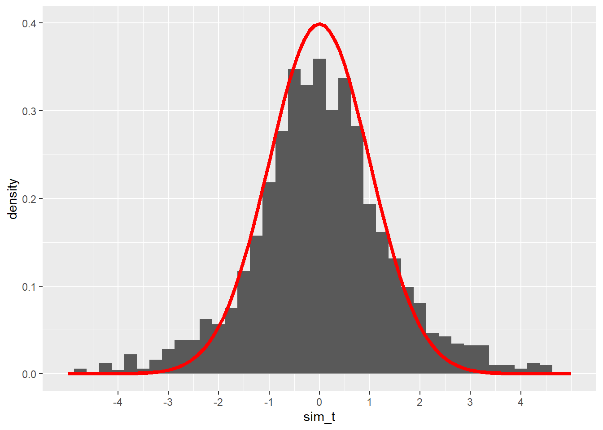

Chapter 19 Inference for one mean
2.0
19.1 Introduction
In this chapter, we’ll learn about the Student t distribution and use it to perform a t test for a single mean.
19.1.2 Download the R notebook file
Check the upper-right corner in RStudio to make sure you’re in your intro_stats project. Then click on the following link to download this chapter as an R notebook file (.Rmd).
https://vectorposse.github.io/intro_stats/chapter_downloads/19-inference_for_one_mean.Rmd
Once the file is downloaded, move it to your project folder in RStudio and open it there.
19.2 Load packages
We load the standard tidyverse and infer packages as well as the mosaic package to run some simulation. The openintro package contains the teacher data and the hsb2 data.
library(tidyverse)
library(infer)
library(mosaic)
library(openintro)19.3 Simulating means
Systolic blood pressure (SBP) for women in the U.S. and Canada follows a normal distribution with a mean of 114 and a standard deviation of 14.
Suppose we gather a random sample of 4 women and measure their SBP. We can simulate doing that with the rnorm command:
set.seed(5151977)
SBP_sample <- rnorm(4, mean = 114, sd = 14)
SBP_sample## [1] 99.75130 126.47739 99.53632 115.05247We summarize our sample by taking the mean and standard deviation:
mean(SBP_sample)## [1] 110.2044sd(SBP_sample)## [1] 13.05615The sample mean \(\bar{y}\) = 110.2043696 is somewhat close to the true population mean \(\mu = 114\) and the sample standard deviation \(s\) = 13.0561519 is somewhat close to the true population standard deviation \(\sigma = 14\). (\(\mu\) is the Greek letter “mu” and \(\sigma\) is the Greek letter “sigma”.)
Let’s simulate lots of samples of size 4. For each sample, we calculate the sample mean.
set.seed(5151977)
sims <- do(2000) * mean(rnorm(4, mean = 114, sd = 14))
sims## mean
## 1 110.95524
## 2 111.06853
## 3 109.91266
## 4 113.51487
## 5 114.84292
## 6 124.12671
## 7 110.52277
## 8 122.91483
## 9 113.79958
## 10 121.52306
## 11 119.45527
## 12 130.95196
## 13 106.25140
## 14 119.48189
## 15 122.95412
## 16 111.36293
## 17 115.26561
## 18 120.00887
## 19 111.12422
## 20 125.11449
## 21 112.54356
## 22 121.05007
## 23 111.92577
## 24 112.37685
## 25 108.60242
## 26 112.14135
## 27 121.03786
## 28 102.21504
## 29 131.42457
## 30 115.75208
## 31 118.57539
## 32 107.75367
## 33 113.73938
## 34 107.48598
## 35 104.02251
## 36 110.26283
## 37 114.03591
## 38 105.89310
## 39 112.81019
## 40 123.99549
## 41 102.07213
## 42 102.65507
## 43 119.93490
## 44 123.99603
## 45 119.72605
## 46 122.57296
## 47 112.79102
## 48 108.88674
## 49 109.46094
## 50 111.52494
## 51 106.51913
## 52 118.92374
## 53 122.65041
## 54 106.33611
## 55 114.84009
## 56 119.94925
## 57 87.48567
## 58 107.67256
## 59 112.29705
## 60 114.49032
## 61 106.00521
## 62 103.61574
## 63 114.44472
## 64 124.40115
## 65 107.25545
## 66 106.18013
## 67 107.38138
## 68 115.50453
## 69 118.83450
## 70 109.98443
## 71 133.63093
## 72 118.93599
## 73 112.55365
## 74 122.22781
## 75 119.94346
## 76 120.08051
## 77 115.73125
## 78 99.12175
## 79 110.20178
## 80 97.50553
## 81 126.13150
## 82 110.10237
## 83 116.45862
## 84 118.18392
## 85 120.15207
## 86 107.32720
## 87 117.33775
## 88 96.64247
## 89 109.86058
## 90 124.84727
## 91 109.67761
## 92 117.45921
## 93 110.36776
## 94 118.71447
## 95 122.94817
## 96 113.04646
## 97 116.69160
## 98 113.14800
## 99 117.60656
## 100 116.98939
## 101 113.87627
## 102 117.60049
## 103 119.06600
## 104 126.74302
## 105 116.53015
## 106 121.92932
## 107 107.90235
## 108 118.06294
## 109 116.88269
## 110 119.81950
## 111 127.56483
## 112 109.67205
## 113 113.93574
## 114 110.89664
## 115 115.59765
## 116 98.08517
## 117 108.69878
## 118 114.50676
## 119 109.82143
## 120 118.93792
## 121 121.50253
## 122 101.73570
## 123 117.77834
## 124 103.81164
## 125 101.48508
## 126 127.18256
## 127 119.56654
## 128 120.47221
## 129 123.70693
## 130 125.67436
## 131 124.50634
## 132 99.11626
## 133 113.36051
## 134 107.59688
## 135 119.69572
## 136 113.57789
## 137 114.00803
## 138 114.95061
## 139 117.94756
## 140 106.20955
## 141 112.69388
## 142 115.82052
## 143 124.41148
## 144 119.49821
## 145 114.44646
## 146 101.22920
## 147 109.58204
## 148 109.16187
## 149 105.36936
## 150 111.49145
## 151 118.48739
## 152 101.84622
## 153 115.05308
## 154 121.74454
## 155 115.84609
## 156 114.60402
## 157 121.84957
## 158 118.38499
## 159 117.98274
## 160 121.94268
## 161 112.60397
## 162 106.21758
## 163 121.90313
## 164 122.05917
## 165 128.85365
## 166 106.67919
## 167 120.88093
## 168 105.27210
## 169 133.73894
## 170 112.95960
## 171 114.62501
## 172 118.79292
## 173 114.05784
## 174 106.07207
## 175 122.25110
## 176 124.99923
## 177 111.32837
## 178 112.67882
## 179 118.10980
## 180 113.55150
## 181 109.94996
## 182 130.17665
## 183 117.41869
## 184 112.29039
## 185 115.18728
## 186 119.10711
## 187 121.18710
## 188 116.40250
## 189 123.58668
## 190 117.05543
## 191 114.30052
## 192 120.59040
## 193 108.93992
## 194 116.69512
## 195 123.65056
## 196 120.25289
## 197 119.10736
## 198 121.35013
## 199 108.22576
## 200 123.96013
## 201 120.50076
## 202 109.45569
## 203 124.60173
## 204 109.20374
## 205 109.14185
## 206 111.64284
## 207 127.80637
## 208 97.05353
## 209 104.42525
## 210 108.70502
## 211 123.53495
## 212 111.92085
## 213 103.79728
## 214 109.04242
## 215 101.15528
## 216 108.99493
## 217 115.66033
## 218 104.27866
## 219 127.74945
## 220 119.18990
## 221 99.37513
## 222 119.24557
## 223 107.03566
## 224 118.83983
## 225 118.84264
## 226 124.91099
## 227 103.66402
## 228 109.91857
## 229 116.49506
## 230 112.01135
## 231 110.40098
## 232 100.23115
## 233 115.89741
## 234 120.00895
## 235 110.26257
## 236 104.91429
## 237 121.20485
## 238 127.85001
## 239 121.99891
## 240 116.34753
## 241 113.57648
## 242 113.91281
## 243 117.83396
## 244 117.19323
## 245 123.04011
## 246 111.43295
## 247 108.88549
## 248 101.10892
## 249 108.54658
## 250 128.54127
## 251 132.02932
## 252 117.36163
## 253 100.19385
## 254 113.30224
## 255 120.65156
## 256 104.76686
## 257 118.55390
## 258 118.08333
## 259 118.85312
## 260 116.92587
## 261 125.34601
## 262 113.04661
## 263 127.01136
## 264 116.97079
## 265 115.09776
## 266 120.77965
## 267 112.78021
## 268 120.98030
## 269 96.97945
## 270 109.06035
## 271 113.31895
## 272 118.24567
## 273 128.56256
## 274 122.71663
## 275 122.79106
## 276 107.69711
## 277 122.51593
## 278 121.62137
## 279 115.44487
## 280 114.65932
## 281 100.87231
## 282 118.26446
## 283 108.46425
## 284 115.83714
## 285 121.39197
## 286 110.09557
## 287 113.85471
## 288 117.69545
## 289 116.22425
## 290 120.78184
## 291 126.43991
## 292 103.53681
## 293 116.32864
## 294 108.06495
## 295 106.65624
## 296 120.69772
## 297 119.37433
## 298 100.02332
## 299 118.59332
## 300 119.53438
## 301 107.11014
## 302 111.97493
## 303 103.47491
## 304 111.99805
## 305 118.71416
## 306 116.33954
## 307 125.49563
## 308 107.78016
## 309 102.12925
## 310 112.12212
## 311 117.51136
## 312 110.08975
## 313 114.72259
## 314 120.56031
## 315 122.04100
## 316 111.17129
## 317 116.39056
## 318 111.50435
## 319 104.30895
## 320 101.31131
## 321 114.53301
## 322 113.94972
## 323 116.04217
## 324 112.54460
## 325 113.52116
## 326 110.60055
## 327 117.48808
## 328 116.50048
## 329 119.46474
## 330 123.91257
## 331 111.94294
## 332 102.98073
## 333 109.80824
## 334 106.57737
## 335 113.14494
## 336 100.74728
## 337 100.16375
## 338 115.02875
## 339 110.51485
## 340 110.32509
## 341 120.91380
## 342 118.33534
## 343 111.63758
## 344 110.58353
## 345 118.32547
## 346 106.03945
## 347 114.78878
## 348 95.12731
## 349 115.50274
## 350 123.32999
## 351 104.88001
## 352 127.10250
## 353 127.14507
## 354 108.64777
## 355 112.02036
## 356 120.33362
## 357 120.23128
## 358 111.15694
## 359 123.51130
## 360 116.82204
## 361 104.68623
## 362 114.13924
## 363 111.40374
## 364 109.04713
## 365 118.19404
## 366 126.41994
## 367 119.38439
## 368 112.72901
## 369 106.14565
## 370 115.27480
## 371 112.79306
## 372 111.38774
## 373 115.34948
## 374 105.88397
## 375 127.93875
## 376 106.13218
## 377 103.12044
## 378 117.84138
## 379 117.41520
## 380 125.36306
## 381 105.82215
## 382 127.51360
## 383 103.99779
## 384 113.93482
## 385 104.04683
## 386 106.93355
## 387 107.05414
## 388 104.54855
## 389 125.37328
## 390 112.21401
## 391 113.13934
## 392 125.71206
## 393 105.71941
## 394 112.40308
## 395 108.61642
## 396 107.48780
## 397 118.09707
## 398 125.35679
## 399 97.45444
## 400 100.10943
## 401 116.58694
## 402 106.78057
## 403 111.91079
## 404 116.75726
## 405 108.17398
## 406 99.58362
## 407 114.57293
## 408 109.85168
## 409 121.84334
## 410 107.86493
## 411 127.12080
## 412 124.86587
## 413 99.53627
## 414 116.46358
## 415 124.81236
## 416 111.73796
## 417 108.87264
## 418 117.94757
## 419 115.56643
## 420 123.96318
## 421 113.77360
## 422 119.94670
## 423 108.32990
## 424 124.58518
## 425 114.06451
## 426 110.54113
## 427 114.85524
## 428 117.35423
## 429 125.28117
## 430 114.69364
## 431 106.83007
## 432 110.89630
## 433 115.50097
## 434 121.92301
## 435 118.78799
## 436 113.84525
## 437 120.64767
## 438 109.36883
## 439 121.13011
## 440 113.52213
## 441 115.16573
## 442 123.03323
## 443 111.16598
## 444 110.23718
## 445 121.01684
## 446 104.57516
## 447 114.23794
## 448 116.48334
## 449 112.93738
## 450 116.97262
## 451 123.01939
## 452 103.86612
## 453 108.16585
## 454 117.46619
## 455 102.80921
## 456 111.45025
## 457 113.71313
## 458 115.76154
## 459 107.26893
## 460 122.26012
## 461 136.24026
## 462 123.72361
## 463 110.92298
## 464 100.08531
## 465 112.24392
## 466 110.54597
## 467 111.99873
## 468 112.89430
## 469 112.26102
## 470 117.39683
## 471 117.50764
## 472 106.53525
## 473 105.80527
## 474 115.67630
## 475 100.35041
## 476 113.07986
## 477 114.39667
## 478 118.53729
## 479 125.13422
## 480 116.61993
## 481 113.62256
## 482 117.60229
## 483 121.42464
## 484 123.01585
## 485 110.59016
## 486 118.49153
## 487 116.60030
## 488 114.53784
## 489 126.91723
## 490 96.27709
## 491 103.54786
## 492 105.34090
## 493 113.60563
## 494 119.49589
## 495 120.85729
## 496 111.34998
## 497 108.19074
## 498 105.44374
## 499 111.48404
## 500 115.11209
## 501 113.31679
## 502 107.93316
## 503 121.78264
## 504 110.72774
## 505 108.02673
## 506 113.40761
## 507 121.72887
## 508 112.27018
## 509 105.09043
## 510 121.76014
## 511 116.73332
## 512 121.76908
## 513 117.22549
## 514 108.76471
## 515 107.87862
## 516 117.75028
## 517 110.29232
## 518 116.54346
## 519 109.25235
## 520 113.03419
## 521 117.64512
## 522 121.47154
## 523 114.08779
## 524 106.18617
## 525 119.07393
## 526 106.86533
## 527 115.46940
## 528 101.70763
## 529 97.54206
## 530 110.64455
## 531 107.06610
## 532 112.42027
## 533 118.73436
## 534 111.71727
## 535 104.05510
## 536 129.54831
## 537 117.09248
## 538 124.54404
## 539 116.33296
## 540 123.40549
## 541 102.44298
## 542 111.77241
## 543 120.33461
## 544 117.91417
## 545 108.52797
## 546 126.19165
## 547 113.31332
## 548 107.87823
## 549 119.66154
## 550 111.16370
## 551 109.34024
## 552 117.21184
## 553 119.04455
## 554 117.19549
## 555 107.11711
## 556 106.42320
## 557 121.77364
## 558 119.82572
## 559 113.46557
## 560 115.69528
## 561 110.62206
## 562 122.38456
## 563 122.98836
## 564 108.48447
## 565 106.09706
## 566 116.32697
## 567 116.35801
## 568 124.40857
## 569 116.82206
## 570 114.09462
## 571 115.40778
## 572 116.96016
## 573 98.85140
## 574 135.20693
## 575 119.75133
## 576 114.80116
## 577 108.22753
## 578 117.61364
## 579 116.36189
## 580 109.92622
## 581 111.91415
## 582 116.15821
## 583 105.58993
## 584 108.08802
## 585 117.67850
## 586 111.13633
## 587 132.24823
## 588 110.85715
## 589 87.83593
## 590 125.64538
## 591 109.59319
## 592 101.12824
## 593 113.94740
## 594 124.31554
## 595 118.67357
## 596 111.03314
## 597 121.03873
## 598 110.29637
## 599 112.24814
## 600 119.22314
## 601 124.26302
## 602 112.70908
## 603 97.54202
## 604 112.54098
## 605 117.30295
## 606 113.61166
## 607 126.07466
## 608 108.19994
## 609 117.06018
## 610 117.99884
## 611 124.48122
## 612 120.04676
## 613 120.79039
## 614 113.56916
## 615 106.28474
## 616 121.85101
## 617 121.80984
## 618 107.49041
## 619 110.51965
## 620 122.22094
## 621 112.96608
## 622 107.79417
## 623 109.04927
## 624 100.50307
## 625 117.33123
## 626 125.95204
## 627 122.03779
## 628 116.83302
## 629 110.13387
## 630 118.26938
## 631 123.07836
## 632 106.96144
## 633 119.32938
## 634 114.60838
## 635 104.26998
## 636 117.78356
## 637 112.10798
## 638 116.92210
## 639 122.20747
## 640 103.41158
## 641 104.35021
## 642 111.00875
## 643 126.15944
## 644 120.43646
## 645 103.26239
## 646 121.87818
## 647 109.79967
## 648 111.64820
## 649 116.67954
## 650 105.66557
## 651 112.75183
## 652 121.22979
## 653 114.24457
## 654 103.54787
## 655 101.95563
## 656 103.88058
## 657 124.59750
## 658 113.34938
## 659 104.30297
## 660 124.46201
## 661 114.08120
## 662 126.73495
## 663 117.66581
## 664 99.67641
## 665 107.33070
## 666 107.93766
## 667 113.07169
## 668 114.49677
## 669 109.61490
## 670 102.14626
## 671 118.50619
## 672 109.63734
## 673 125.07082
## 674 106.13135
## 675 120.89767
## 676 118.49616
## 677 121.94440
## 678 116.67561
## 679 110.53741
## 680 109.26362
## 681 121.35528
## 682 120.08566
## 683 106.30738
## 684 105.02832
## 685 116.33245
## 686 113.73313
## 687 121.30509
## 688 127.22500
## 689 115.56041
## 690 121.46557
## 691 118.54388
## 692 113.01171
## 693 130.12382
## 694 120.11217
## 695 105.06264
## 696 107.70540
## 697 116.29044
## 698 107.87553
## 699 99.27654
## 700 111.77306
## 701 112.65223
## 702 109.55930
## 703 116.77807
## 704 109.78229
## 705 119.13192
## 706 113.67539
## 707 118.85713
## 708 121.56431
## 709 116.28196
## 710 119.04540
## 711 109.45345
## 712 114.95872
## 713 115.29909
## 714 112.15066
## 715 116.73322
## 716 114.44525
## 717 111.12546
## 718 112.27558
## 719 113.56506
## 720 114.10238
## 721 100.49031
## 722 113.25783
## 723 111.85214
## 724 116.96490
## 725 108.83318
## 726 114.62116
## 727 106.61273
## 728 109.46670
## 729 123.27669
## 730 120.57396
## 731 103.87767
## 732 106.94421
## 733 108.34143
## 734 116.92814
## 735 110.42256
## 736 109.48496
## 737 116.48718
## 738 120.68135
## 739 111.55352
## 740 93.88022
## 741 107.22182
## 742 124.23818
## 743 113.48573
## 744 114.27485
## 745 111.79580
## 746 113.71912
## 747 110.32422
## 748 122.13764
## 749 111.87946
## 750 127.66771
## 751 117.10136
## 752 115.48153
## 753 110.11040
## 754 112.85943
## 755 105.63839
## 756 108.13891
## 757 120.85112
## 758 117.88342
## 759 111.69815
## 760 119.76180
## 761 134.35632
## 762 109.77925
## 763 119.67662
## 764 120.93808
## 765 109.29167
## 766 122.32388
## 767 109.15243
## 768 117.27312
## 769 108.50841
## 770 111.76736
## 771 124.59931
## 772 112.06909
## 773 112.19180
## 774 114.38893
## 775 120.83596
## 776 107.44710
## 777 121.63091
## 778 114.90195
## 779 101.89752
## 780 111.35287
## 781 117.87474
## 782 101.78017
## 783 110.58340
## 784 125.94421
## 785 123.96811
## 786 113.46274
## 787 121.76359
## 788 110.06839
## 789 102.44855
## 790 111.36805
## 791 112.06821
## 792 107.07052
## 793 109.29914
## 794 123.65203
## 795 105.85683
## 796 111.35574
## 797 125.17185
## 798 100.63606
## 799 104.69494
## 800 116.48918
## 801 97.65872
## 802 110.70257
## 803 99.96854
## 804 118.34047
## 805 98.87707
## 806 106.96261
## 807 121.66617
## 808 120.60981
## 809 113.29107
## 810 111.57254
## 811 108.33329
## 812 122.84750
## 813 116.70816
## 814 123.37593
## 815 105.93103
## 816 120.38120
## 817 117.05266
## 818 117.38626
## 819 111.90372
## 820 124.06628
## 821 108.95796
## 822 119.86165
## 823 117.27993
## 824 120.37133
## 825 128.86851
## 826 109.71630
## 827 111.71660
## 828 110.05162
## 829 113.51702
## 830 108.89157
## 831 107.63479
## 832 108.94371
## 833 118.58841
## 834 114.21696
## 835 111.22482
## 836 122.48018
## 837 115.61993
## 838 109.40633
## 839 104.44660
## 840 111.94576
## 841 127.03510
## 842 119.93454
## 843 111.68510
## 844 120.58653
## 845 108.03814
## 846 113.34691
## 847 106.62631
## 848 110.40374
## 849 122.61251
## 850 114.44325
## 851 104.69718
## 852 106.56099
## 853 127.06369
## 854 125.45967
## 855 114.71837
## 856 117.62471
## 857 120.52498
## 858 116.44214
## 859 107.40783
## 860 114.50855
## 861 115.58185
## 862 115.97269
## 863 114.63601
## 864 99.79335
## 865 109.73196
## 866 108.74116
## 867 102.28575
## 868 107.32777
## 869 117.85405
## 870 105.90642
## 871 112.89515
## 872 134.41702
## 873 112.23719
## 874 104.71251
## 875 118.32708
## 876 104.18355
## 877 128.33015
## 878 116.90507
## 879 120.39067
## 880 126.98088
## 881 116.34320
## 882 109.82074
## 883 123.30521
## 884 106.80564
## 885 118.13258
## 886 97.52207
## 887 112.72367
## 888 115.18713
## 889 117.35420
## 890 118.52945
## 891 112.23963
## 892 112.33860
## 893 117.71835
## 894 113.51003
## 895 102.75577
## 896 120.41303
## 897 113.45623
## 898 106.96468
## 899 118.39375
## 900 112.78840
## 901 111.73239
## 902 100.42487
## 903 117.71950
## 904 111.69543
## 905 102.44391
## 906 110.05755
## 907 116.58030
## 908 116.50860
## 909 120.90876
## 910 120.61065
## 911 114.09941
## 912 108.47591
## 913 114.89356
## 914 111.55837
## 915 125.64014
## 916 120.40303
## 917 115.25511
## 918 113.53279
## 919 108.45547
## 920 104.94686
## 921 113.27691
## 922 113.20703
## 923 108.27743
## 924 118.50170
## 925 116.89015
## 926 111.98375
## 927 116.81695
## 928 122.73135
## 929 103.39012
## 930 117.62376
## 931 112.30233
## 932 113.45888
## 933 116.66527
## 934 118.67719
## 935 114.26432
## 936 122.97697
## 937 125.19933
## 938 118.29743
## 939 110.50635
## 940 115.82745
## 941 121.11219
## 942 113.55447
## 943 117.57714
## 944 112.28155
## 945 122.27081
## 946 106.57600
## 947 109.08308
## 948 117.50010
## 949 122.11137
## 950 122.16193
## 951 121.44458
## 952 117.33063
## 953 123.51882
## 954 121.94215
## 955 118.96786
## 956 114.31738
## 957 107.41746
## 958 113.77130
## 959 111.35407
## 960 107.59777
## 961 109.19277
## 962 127.13358
## 963 100.17054
## 964 120.18044
## 965 117.28016
## 966 109.87820
## 967 118.51631
## 968 108.74053
## 969 107.78547
## 970 95.13907
## 971 108.20715
## 972 118.80471
## 973 118.20027
## 974 113.92949
## 975 130.31542
## 976 114.68755
## 977 103.50685
## 978 109.87666
## 979 117.27346
## 980 113.62313
## 981 106.39070
## 982 113.30711
## 983 110.87394
## 984 125.48873
## 985 110.72711
## 986 112.07703
## 987 106.68431
## 988 105.44745
## 989 110.80564
## 990 109.69366
## 991 113.20748
## 992 114.57158
## 993 110.00366
## 994 106.38230
## 995 113.29721
## 996 121.58053
## 997 116.29353
## 998 118.41607
## 999 100.96017
## 1000 108.10720
## 1001 130.32826
## 1002 120.17653
## 1003 115.76080
## 1004 104.11123
## 1005 111.41403
## 1006 110.55287
## 1007 109.45958
## 1008 117.71342
## 1009 106.94909
## 1010 119.46146
## 1011 111.08046
## 1012 117.20810
## 1013 121.10426
## 1014 113.24686
## 1015 116.21945
## 1016 103.16162
## 1017 109.84911
## 1018 119.90426
## 1019 116.16652
## 1020 115.20789
## 1021 115.37497
## 1022 109.81569
## 1023 123.91835
## 1024 118.28780
## 1025 117.16872
## 1026 114.28380
## 1027 117.47676
## 1028 127.92206
## 1029 120.61338
## 1030 119.82510
## 1031 117.25111
## 1032 109.81241
## 1033 110.86057
## 1034 99.17878
## 1035 105.74768
## 1036 124.20102
## 1037 125.06881
## 1038 113.94185
## 1039 119.46429
## 1040 110.56440
## 1041 103.70747
## 1042 114.42114
## 1043 119.36101
## 1044 114.96361
## 1045 127.03302
## 1046 110.93612
## 1047 121.32774
## 1048 125.58299
## 1049 113.66107
## 1050 127.45563
## 1051 121.29938
## 1052 115.91205
## 1053 125.66449
## 1054 117.38157
## 1055 113.01597
## 1056 113.25878
## 1057 127.29828
## 1058 125.32686
## 1059 109.75475
## 1060 112.37593
## 1061 107.38527
## 1062 115.14333
## 1063 111.45853
## 1064 120.82785
## 1065 105.20941
## 1066 108.54900
## 1067 114.02939
## 1068 118.37864
## 1069 102.11114
## 1070 116.64180
## 1071 108.40744
## 1072 117.18136
## 1073 108.19509
## 1074 107.14360
## 1075 116.90222
## 1076 104.15030
## 1077 100.26139
## 1078 105.81597
## 1079 113.34212
## 1080 111.94739
## 1081 121.14570
## 1082 118.44696
## 1083 107.34237
## 1084 117.24360
## 1085 107.60404
## 1086 118.85538
## 1087 106.40600
## 1088 122.85663
## 1089 104.07504
## 1090 113.22320
## 1091 114.97140
## 1092 118.09961
## 1093 117.03136
## 1094 107.14066
## 1095 123.18202
## 1096 112.09900
## 1097 107.97797
## 1098 111.92963
## 1099 111.93445
## 1100 128.90915
## 1101 115.24124
## 1102 111.91907
## 1103 99.85996
## 1104 113.54477
## 1105 108.94829
## 1106 128.90917
## 1107 107.32140
## 1108 120.24379
## 1109 105.11357
## 1110 111.05352
## 1111 120.79707
## 1112 115.00555
## 1113 111.01941
## 1114 111.84065
## 1115 114.34084
## 1116 105.92397
## 1117 111.70965
## 1118 119.16662
## 1119 111.73266
## 1120 105.54516
## 1121 113.79357
## 1122 117.76457
## 1123 102.44144
## 1124 103.29840
## 1125 115.05315
## 1126 111.03007
## 1127 116.53265
## 1128 107.45888
## 1129 115.61642
## 1130 118.95059
## 1131 111.51774
## 1132 117.40121
## 1133 112.47827
## 1134 125.66763
## 1135 119.79011
## 1136 111.11484
## 1137 114.83657
## 1138 105.88437
## 1139 108.63627
## 1140 116.41257
## 1141 110.12795
## 1142 123.79206
## 1143 118.45650
## 1144 113.94787
## 1145 102.62388
## 1146 111.09719
## 1147 118.36165
## 1148 112.94732
## 1149 108.43720
## 1150 115.28137
## 1151 119.46534
## 1152 106.99961
## 1153 119.62218
## 1154 118.95339
## 1155 117.88381
## 1156 119.81714
## 1157 100.78069
## 1158 131.23269
## 1159 107.50770
## 1160 111.55628
## 1161 108.06604
## 1162 106.77945
## 1163 113.80202
## 1164 105.77542
## 1165 116.13634
## 1166 119.07567
## 1167 111.49404
## 1168 100.29369
## 1169 116.34176
## 1170 113.23696
## 1171 115.80735
## 1172 116.01929
## 1173 117.67437
## 1174 115.35731
## 1175 117.38773
## 1176 109.38466
## 1177 118.08699
## 1178 114.07595
## 1179 111.67969
## 1180 111.36346
## 1181 111.30338
## 1182 112.80356
## 1183 113.69834
## 1184 124.86923
## 1185 108.54999
## 1186 113.09888
## 1187 104.47500
## 1188 116.31281
## 1189 122.09594
## 1190 112.86609
## 1191 98.80012
## 1192 106.70147
## 1193 117.85387
## 1194 112.45122
## 1195 116.41153
## 1196 117.87522
## 1197 109.68763
## 1198 111.52220
## 1199 107.07082
## 1200 111.32972
## 1201 112.26528
## 1202 111.10109
## 1203 114.52308
## 1204 112.31476
## 1205 117.47502
## 1206 116.52666
## 1207 120.81598
## 1208 116.33793
## 1209 112.74801
## 1210 127.52139
## 1211 121.52660
## 1212 105.79790
## 1213 117.85491
## 1214 97.34274
## 1215 111.33687
## 1216 107.07140
## 1217 126.33510
## 1218 110.39163
## 1219 113.56320
## 1220 115.64189
## 1221 113.85816
## 1222 104.43309
## 1223 111.79075
## 1224 110.78703
## 1225 110.67750
## 1226 116.06451
## 1227 108.96969
## 1228 108.15498
## 1229 112.92344
## 1230 107.14717
## 1231 115.92812
## 1232 113.04762
## 1233 109.43041
## 1234 114.23104
## 1235 119.86467
## 1236 126.11721
## 1237 128.23638
## 1238 113.65702
## 1239 108.32141
## 1240 114.21378
## 1241 107.63545
## 1242 117.78865
## 1243 129.03578
## 1244 115.47835
## 1245 123.17433
## 1246 115.30096
## 1247 112.59428
## 1248 105.57202
## 1249 111.88252
## 1250 110.88433
## 1251 114.84263
## 1252 107.40725
## 1253 111.47207
## 1254 120.21071
## 1255 111.89527
## 1256 118.35163
## 1257 117.88052
## 1258 116.34688
## 1259 112.34029
## 1260 103.99297
## 1261 123.56539
## 1262 111.97952
## 1263 116.69397
## 1264 116.34907
## 1265 116.79808
## 1266 101.95297
## 1267 117.86954
## 1268 108.23262
## 1269 132.30578
## 1270 120.46958
## 1271 114.94029
## 1272 120.20149
## 1273 100.30723
## 1274 129.85113
## 1275 115.81816
## 1276 117.02384
## 1277 120.27815
## 1278 121.85546
## 1279 103.90078
## 1280 122.19051
## 1281 116.57745
## 1282 109.95009
## 1283 105.23317
## 1284 116.93435
## 1285 111.57148
## 1286 119.13922
## 1287 125.54779
## 1288 109.10373
## 1289 110.70050
## 1290 105.11765
## 1291 109.87981
## 1292 118.19105
## 1293 114.29103
## 1294 106.15203
## 1295 102.50338
## 1296 109.96188
## 1297 108.15569
## 1298 113.50295
## 1299 111.48597
## 1300 121.54557
## 1301 110.93386
## 1302 103.80765
## 1303 119.33408
## 1304 102.02712
## 1305 118.55922
## 1306 107.06847
## 1307 108.79602
## 1308 116.50134
## 1309 118.38453
## 1310 118.79259
## 1311 106.82584
## 1312 102.34545
## 1313 130.01962
## 1314 109.81604
## 1315 119.12788
## 1316 110.37244
## 1317 95.99251
## 1318 119.60626
## 1319 119.44452
## 1320 123.12385
## 1321 119.36772
## 1322 116.31835
## 1323 111.28271
## 1324 122.10482
## 1325 114.14807
## 1326 127.06285
## 1327 118.53668
## 1328 115.02598
## 1329 108.22127
## 1330 116.81348
## 1331 112.81088
## 1332 118.34949
## 1333 114.29864
## 1334 123.59628
## 1335 119.70373
## 1336 117.51460
## 1337 127.34626
## 1338 113.07955
## 1339 110.45866
## 1340 119.92736
## 1341 117.28564
## 1342 108.09077
## 1343 104.62263
## 1344 105.07416
## 1345 104.88394
## 1346 110.06062
## 1347 108.95208
## 1348 132.09090
## 1349 107.30942
## 1350 112.99771
## 1351 117.46157
## 1352 117.16070
## 1353 109.21347
## 1354 112.24620
## 1355 112.61793
## 1356 121.18151
## 1357 103.94874
## 1358 113.37763
## 1359 122.73741
## 1360 115.32113
## 1361 111.77167
## 1362 110.99553
## 1363 121.94203
## 1364 110.34328
## 1365 105.30604
## 1366 116.09629
## 1367 102.05262
## 1368 109.95499
## 1369 119.25235
## 1370 118.15268
## 1371 112.32892
## 1372 105.47613
## 1373 111.76131
## 1374 100.76358
## 1375 109.93715
## 1376 100.96184
## 1377 125.21202
## 1378 110.37468
## 1379 124.80175
## 1380 109.96470
## 1381 115.14373
## 1382 121.15185
## 1383 115.30872
## 1384 118.92581
## 1385 110.46122
## 1386 111.08989
## 1387 105.44359
## 1388 117.45240
## 1389 109.14479
## 1390 115.13759
## 1391 110.39389
## 1392 115.01801
## 1393 108.04009
## 1394 120.60450
## 1395 118.56538
## 1396 117.14946
## 1397 120.93808
## 1398 114.59867
## 1399 118.94317
## 1400 117.58117
## 1401 110.22179
## 1402 106.15499
## 1403 113.10225
## 1404 110.11491
## 1405 102.21913
## 1406 105.08358
## 1407 103.49084
## 1408 100.73561
## 1409 107.55905
## 1410 106.16039
## 1411 129.10527
## 1412 108.82824
## 1413 121.21923
## 1414 106.53840
## 1415 102.58445
## 1416 118.46176
## 1417 127.49937
## 1418 106.71160
## 1419 122.65682
## 1420 114.51373
## 1421 121.56658
## 1422 113.11742
## 1423 122.15894
## 1424 115.77924
## 1425 111.80496
## 1426 112.46076
## 1427 109.06221
## 1428 113.28135
## 1429 110.47385
## 1430 122.36573
## 1431 118.63585
## 1432 111.77054
## 1433 110.29033
## 1434 114.62444
## 1435 108.00727
## 1436 114.92012
## 1437 108.95962
## 1438 102.97774
## 1439 119.22310
## 1440 120.43765
## 1441 108.49537
## 1442 110.92757
## 1443 107.97688
## 1444 116.12105
## 1445 101.42974
## 1446 108.56945
## 1447 123.53596
## 1448 113.23547
## 1449 111.06023
## 1450 123.54516
## 1451 116.48961
## 1452 114.14523
## 1453 122.20655
## 1454 103.98278
## 1455 121.67445
## 1456 99.28229
## 1457 114.72245
## 1458 123.91351
## 1459 125.14108
## 1460 113.67279
## 1461 111.81406
## 1462 113.03427
## 1463 112.31009
## 1464 123.09269
## 1465 118.35434
## 1466 114.97969
## 1467 116.46900
## 1468 110.49186
## 1469 106.00737
## 1470 111.91734
## 1471 123.08918
## 1472 120.01327
## 1473 108.06641
## 1474 109.38992
## 1475 109.96492
## 1476 123.97694
## 1477 109.80171
## 1478 108.36984
## 1479 120.85546
## 1480 118.34128
## 1481 117.86559
## 1482 116.26975
## 1483 108.53301
## 1484 118.59358
## 1485 116.85862
## 1486 116.77585
## 1487 120.74770
## 1488 107.73169
## 1489 119.16405
## 1490 108.31084
## 1491 116.06004
## 1492 112.46070
## 1493 116.88191
## 1494 111.17441
## 1495 104.23124
## 1496 103.50059
## 1497 101.43330
## 1498 113.01985
## 1499 110.29478
## 1500 115.67790
## 1501 118.72363
## 1502 120.64310
## 1503 109.50663
## 1504 129.39962
## 1505 110.08841
## 1506 125.67869
## 1507 112.94456
## 1508 130.30593
## 1509 110.96469
## 1510 105.34348
## 1511 113.96547
## 1512 108.46737
## 1513 122.71343
## 1514 102.94200
## 1515 124.77048
## 1516 116.56960
## 1517 122.55535
## 1518 116.02211
## 1519 114.43897
## 1520 121.18077
## 1521 119.74168
## 1522 118.83429
## 1523 121.15772
## 1524 114.06548
## 1525 106.46666
## 1526 119.30676
## 1527 133.72091
## 1528 123.13389
## 1529 104.38520
## 1530 115.42896
## 1531 117.66344
## 1532 119.83591
## 1533 123.98602
## 1534 102.37509
## 1535 114.07874
## 1536 106.97540
## 1537 110.35280
## 1538 116.97690
## 1539 111.18541
## 1540 105.69587
## 1541 104.59612
## 1542 115.75452
## 1543 120.29783
## 1544 123.31126
## 1545 131.44892
## 1546 122.69949
## 1547 113.97907
## 1548 110.09498
## 1549 115.16476
## 1550 100.29843
## 1551 113.91254
## 1552 114.66159
## 1553 103.84541
## 1554 110.39713
## 1555 105.25746
## 1556 102.13013
## 1557 124.34440
## 1558 118.88271
## 1559 109.24473
## 1560 103.34364
## 1561 120.40739
## 1562 116.99994
## 1563 123.02828
## 1564 108.33611
## 1565 119.99752
## 1566 121.03319
## 1567 99.99384
## 1568 116.67556
## 1569 107.83469
## 1570 108.69174
## 1571 105.66309
## 1572 119.96092
## 1573 117.85073
## 1574 117.72457
## 1575 108.18494
## 1576 105.57252
## 1577 109.74319
## 1578 103.37063
## 1579 120.24026
## 1580 117.46247
## 1581 118.56704
## 1582 113.29901
## 1583 126.00136
## 1584 118.37080
## 1585 114.59037
## 1586 123.25053
## 1587 118.19777
## 1588 105.07041
## 1589 110.12177
## 1590 108.81398
## 1591 118.84109
## 1592 114.03587
## 1593 118.08697
## 1594 114.20147
## 1595 115.63426
## 1596 115.48063
## 1597 119.33707
## 1598 113.05393
## 1599 110.55678
## 1600 121.74840
## 1601 123.84287
## 1602 103.31903
## 1603 107.83778
## 1604 117.31981
## 1605 100.17249
## 1606 123.31731
## 1607 113.20546
## 1608 110.73020
## 1609 126.64609
## 1610 102.29858
## 1611 109.91586
## 1612 108.10079
## 1613 111.44146
## 1614 122.73071
## 1615 115.16343
## 1616 109.03564
## 1617 119.87047
## 1618 106.47498
## 1619 109.46235
## 1620 101.66624
## 1621 118.03451
## 1622 116.10188
## 1623 108.65630
## 1624 113.09310
## 1625 104.06154
## 1626 101.97438
## 1627 116.78661
## 1628 110.29435
## 1629 123.46893
## 1630 116.59034
## 1631 102.98659
## 1632 110.18205
## 1633 109.23006
## 1634 120.82451
## 1635 121.75575
## 1636 112.22303
## 1637 105.56302
## 1638 121.47504
## 1639 110.05367
## 1640 104.12317
## 1641 113.38777
## 1642 111.67334
## 1643 114.42323
## 1644 106.43060
## 1645 135.61538
## 1646 115.60082
## 1647 117.35365
## 1648 113.11384
## 1649 117.95815
## 1650 112.93363
## 1651 113.47685
## 1652 105.97033
## 1653 114.98154
## 1654 107.74614
## 1655 116.06752
## 1656 122.10031
## 1657 112.99138
## 1658 114.29996
## 1659 106.96841
## 1660 108.60291
## 1661 121.43145
## 1662 92.95222
## 1663 113.02822
## 1664 111.52353
## 1665 105.84010
## 1666 129.57170
## 1667 116.08035
## 1668 117.68832
## 1669 116.61900
## 1670 122.81734
## 1671 115.13204
## 1672 114.64356
## 1673 116.38536
## 1674 109.62207
## 1675 110.92888
## 1676 114.36763
## 1677 105.78363
## 1678 116.03262
## 1679 101.17360
## 1680 118.69656
## 1681 114.24099
## 1682 113.32326
## 1683 103.40502
## 1684 112.39048
## 1685 113.95558
## 1686 115.26227
## 1687 124.42804
## 1688 118.27150
## 1689 123.43397
## 1690 124.46988
## 1691 110.85936
## 1692 114.07836
## 1693 112.95339
## 1694 120.96305
## 1695 122.99706
## 1696 115.55654
## 1697 115.87079
## 1698 115.29694
## 1699 125.24085
## 1700 128.62481
## 1701 108.18660
## 1702 105.87661
## 1703 104.39514
## 1704 113.98015
## 1705 119.94162
## 1706 120.89582
## 1707 115.58448
## 1708 124.34802
## 1709 119.27451
## 1710 125.94165
## 1711 118.74313
## 1712 118.66193
## 1713 117.66496
## 1714 107.85271
## 1715 116.25929
## 1716 118.91040
## 1717 112.54798
## 1718 108.35888
## 1719 106.78994
## 1720 122.41502
## 1721 112.78309
## 1722 111.49801
## 1723 110.25142
## 1724 100.29204
## 1725 109.43258
## 1726 109.33677
## 1727 108.22743
## 1728 121.09013
## 1729 126.03049
## 1730 114.12910
## 1731 114.46407
## 1732 101.81167
## 1733 109.25527
## 1734 117.17836
## 1735 114.15739
## 1736 106.89497
## 1737 113.97003
## 1738 109.90265
## 1739 120.60851
## 1740 126.19142
## 1741 121.11972
## 1742 111.88430
## 1743 105.94220
## 1744 113.77476
## 1745 111.42531
## 1746 114.39007
## 1747 115.78462
## 1748 112.93819
## 1749 118.81692
## 1750 118.76391
## 1751 123.01901
## 1752 111.04410
## 1753 118.35484
## 1754 110.54607
## 1755 110.85959
## 1756 105.96548
## 1757 116.78229
## 1758 108.15793
## 1759 110.14765
## 1760 109.63972
## 1761 112.02199
## 1762 114.85539
## 1763 117.21206
## 1764 115.58728
## 1765 99.67584
## 1766 116.18988
## 1767 106.56255
## 1768 110.93185
## 1769 120.20929
## 1770 110.24173
## 1771 115.38537
## 1772 123.69769
## 1773 115.34699
## 1774 111.34985
## 1775 109.82229
## 1776 115.89685
## 1777 118.99048
## 1778 118.77597
## 1779 111.15591
## 1780 116.88276
## 1781 116.84949
## 1782 107.54415
## 1783 115.28064
## 1784 113.47038
## 1785 110.72918
## 1786 111.94738
## 1787 107.27141
## 1788 115.04275
## 1789 96.72293
## 1790 122.32240
## 1791 104.26958
## 1792 123.25807
## 1793 115.92358
## 1794 117.70162
## 1795 118.16755
## 1796 118.03596
## 1797 120.34519
## 1798 104.31188
## 1799 132.04806
## 1800 117.71137
## 1801 113.05951
## 1802 110.26341
## 1803 127.21428
## 1804 117.25141
## 1805 108.35096
## 1806 110.27506
## 1807 111.23149
## 1808 124.83066
## 1809 123.39050
## 1810 106.58225
## 1811 109.74921
## 1812 109.04106
## 1813 125.43409
## 1814 110.93092
## 1815 111.74767
## 1816 101.40743
## 1817 116.73829
## 1818 102.78626
## 1819 112.74032
## 1820 105.15150
## 1821 106.97115
## 1822 120.82963
## 1823 115.17882
## 1824 118.71154
## 1825 124.19609
## 1826 109.75987
## 1827 120.38832
## 1828 121.82306
## 1829 106.27523
## 1830 128.54055
## 1831 117.93971
## 1832 106.59459
## 1833 119.75123
## 1834 117.02807
## 1835 117.46441
## 1836 117.25068
## 1837 112.56719
## 1838 108.33113
## 1839 107.22700
## 1840 114.48208
## 1841 110.34761
## 1842 117.18823
## 1843 124.86804
## 1844 115.99743
## 1845 118.54041
## 1846 114.31177
## 1847 122.35911
## 1848 115.61515
## 1849 111.68315
## 1850 119.04893
## 1851 105.15279
## 1852 104.46286
## 1853 108.21831
## 1854 120.25840
## 1855 113.72293
## 1856 116.31275
## 1857 110.21878
## 1858 104.04796
## 1859 116.13271
## 1860 99.73447
## 1861 114.76161
## 1862 123.04099
## 1863 114.48397
## 1864 119.41272
## 1865 114.43066
## 1866 116.57754
## 1867 104.68885
## 1868 102.26670
## 1869 111.31379
## 1870 107.89620
## 1871 107.26937
## 1872 128.56182
## 1873 112.31984
## 1874 117.48175
## 1875 111.82601
## 1876 121.53766
## 1877 108.59204
## 1878 114.00073
## 1879 109.15453
## 1880 115.40349
## 1881 120.02438
## 1882 120.00529
## 1883 114.15522
## 1884 97.21296
## 1885 118.74600
## 1886 110.07800
## 1887 105.74195
## 1888 109.99513
## 1889 115.58094
## 1890 98.49195
## 1891 119.22469
## 1892 108.36079
## 1893 123.17149
## 1894 122.71776
## 1895 119.61528
## 1896 113.61297
## 1897 104.29065
## 1898 119.35944
## 1899 114.59634
## 1900 114.87640
## 1901 114.83493
## 1902 120.75232
## 1903 116.33686
## 1904 112.85593
## 1905 108.99668
## 1906 119.80091
## 1907 107.51762
## 1908 117.00237
## 1909 125.47799
## 1910 109.23858
## 1911 99.10170
## 1912 113.58951
## 1913 110.50543
## 1914 120.26970
## 1915 112.06393
## 1916 101.04741
## 1917 112.63951
## 1918 113.25368
## 1919 121.02941
## 1920 120.40065
## 1921 102.51873
## 1922 122.20321
## 1923 121.08449
## 1924 119.55367
## 1925 115.73619
## 1926 108.47358
## 1927 113.91919
## 1928 115.65892
## 1929 117.53470
## 1930 113.44030
## 1931 112.06709
## 1932 106.90271
## 1933 113.75108
## 1934 118.57237
## 1935 115.23998
## 1936 108.66065
## 1937 108.24943
## 1938 112.21938
## 1939 124.59338
## 1940 113.36595
## 1941 107.43284
## 1942 115.07636
## 1943 116.41288
## 1944 114.93979
## 1945 112.58356
## 1946 118.89955
## 1947 113.45179
## 1948 109.08609
## 1949 122.58892
## 1950 101.93728
## 1951 106.47563
## 1952 120.28890
## 1953 109.49638
## 1954 104.30374
## 1955 112.77269
## 1956 124.76056
## 1957 118.72269
## 1958 123.78044
## 1959 110.63524
## 1960 109.31897
## 1961 107.73594
## 1962 116.17672
## 1963 105.96558
## 1964 119.74607
## 1965 118.69882
## 1966 115.85835
## 1967 104.62583
## 1968 113.57872
## 1969 128.22431
## 1970 115.12682
## 1971 114.34633
## 1972 106.33976
## 1973 112.85725
## 1974 109.54481
## 1975 126.89872
## 1976 106.20579
## 1977 114.33387
## 1978 118.06756
## 1979 120.88291
## 1980 112.68291
## 1981 126.43337
## 1982 110.43387
## 1983 114.83281
## 1984 116.18950
## 1985 105.62630
## 1986 122.38782
## 1987 118.93003
## 1988 113.00455
## 1989 121.08291
## 1990 124.71230
## 1991 111.14368
## 1992 111.19670
## 1993 114.69397
## 1994 113.91546
## 1995 111.82721
## 1996 112.65771
## 1997 118.70725
## 1998 109.79392
## 1999 114.41826
## 2000 114.76945Again, we see that the sample means are close to 114, but there is some variability. Naturally, not every sample is going to have an average of exactly 114. So how much variability do we expect? Let’s graph and find out. We’re going to set the x-axis manually so that we can do some comparisons later.
ggplot(sims, aes(x = mean)) +
geom_histogram(binwidth = 1) +
scale_x_continuous(limits = c(86, 142),
breaks = c(93, 100, 107, 114, 121, 128, 135))## Warning: Removed 2 rows containing missing values (`geom_bar()`).
Most sample means are around 114, but there is a good range of possibilities from around 93 to 135. The population standard deviation \(\sigma\) is 14, but the standard deviation in this graph is clearly much smaller than that. (A large majority of the samples are within 14 of the mean!)
With some fancy mathematics, one can show that the standard deviation of this sampling distribution is not \(\sigma\), but rather \(\sigma/\sqrt{n}\). In other words, this sampling distribution of the mean has a standard error of
\[ \frac{\sigma}{\sqrt{n}} = \frac{14}{\sqrt{4}} = 7. \]
This makes sense: as the sample size increases, we expect the sample mean to be more and more accurate, so the standard error should shrink with large sample sizes.
Let’s re-scale the y-axis to use percentages instead of counts. Then we should be able to superimpose the normal model \(N(114, 7)\) to check visually that it’s the right fit.
# Don't worry about the syntax here.
# You won't need to know how to do this on your own.
ggplot(sims, aes(x = mean)) +
geom_histogram(aes(y = ..density..), binwidth = 1) +
scale_x_continuous(limits = c(86, 142),
breaks = c(93, 100, 107, 114, 121, 128, 135)) +
stat_function(fun = dnorm, args = list(mean = 114, sd = 7),
color = "red", size = 1.5)## Warning: Removed 2 rows containing missing values (`geom_bar()`).
Looks pretty good!
All we do now is convert everything to z scores. In other words, suppose we sample 4 individuals from a population distributed according to the normal model \(N(0, 1)\). Now the standard error of the sampling distribution is
\[ \frac{\sigma}{\sqrt{n}} = \frac{1}{\sqrt{4}} = 0.5. \]
The following code will accomplish all of this. (Don’t worry about the messy syntax. All I’m doing here is making sure that this graph looks exactly the same as the previous graph, except now centered at \(\mu = 0\) instead of \(\mu = 114\).)
# Don't worry about the syntax here.
# You won't need to know how to do this on your own.
sims_z <- data.frame(mean = scale(sims$mean, center = 114, scale = 14))
ggplot(sims_z, aes(x = mean)) +
geom_histogram(aes(y = ..density..), binwidth = 1/14) +
scale_x_continuous(limits = c(-2, 2),
breaks = c(-1.5, -1, -0.5, 0, 0.5, 1, 1.5)) +
stat_function(fun = dnorm, args = list(mean = 0, sd = 0.5),
color = "red", size = 1.5)## Warning: Removed 2 rows containing missing values (`geom_bar()`).
Remember that this is not the standard normal model \(N(0, 1)\). The standard deviation in the graph above is not 1, but 0.5 because that is the standard error when using samples of size 4. (\(1/\sqrt{4} = 0.5\).)
19.4 Unknown standard errors
If we want to run a hypothesis test, we will have a null hypothesis about the true value of the population mean \(\mu\). For example,
\[ H_{0}: \mu = 114 \]
Now we gather a sample and compute the sample mean, say 110.2043696. We would like to be able to compare the sample mean \(\bar{y}\) to the hypothesized value 114 using a z score:
\[ z = \frac{(\bar{y} - \mu)}{\sigma/\sqrt{n}} = \frac{(110.2 - 114)}{\sigma/\sqrt{4}}. \]
However, we have a problem: we usually don’t know the true value of \(\sigma\). In our SBP example, we do happen to know it’s 14, but we won’t know this for a general research question.
The best we can do with a sample is calculate this z score replacing the unknown \(\sigma\) with the sample standard deviation \(s\), 13.0561519. We’ll call this a “t score” instead of a “z score”:
\[ t = \frac{(\bar{y} - \mu)}{s/\sqrt{n}} = \frac{(110.2 - 114)}{13.06/\sqrt{4}} = -0.58. \]
The problem is that \(s\) is not a perfect estimate of \(\sigma\). We saw earlier that \(s\) is usually close to \(\sigma\), but \(s\) has its own sampling variability. That means that our earlier simulation in which we assumed that \(\sigma\) was known and equal to 14 was wrong for the type of situation that will arise when we run a hypothesis test. How wrong was it?
19.5 Simulating t scores
Let’s run the simulation again, but this time with the added uncertainty of using \(s\) to estimate \(\sigma\).
The first step is to write a little function of our own to compute simulated t scores. This function will take a sample of size \(n\) from the true population \(N(\mu, \sigma)\), calculate the sample mean and sample standard deviation, then compute the t score. Don’t worry: you won’t be required to do anything like this on your own.
# Don't worry about the syntax here.
# You won't need to know how to do this on your own.
sim_t <- function(n, mu, sigma) {
sample_values <- rnorm(n, mean = mu, sd = sigma)
y_bar <- mean(sample_values)
s <- sd(sample_values)
t <- (y_bar - mu)/(s / sqrt(n))
}Now we can simulate doing this 2000 times.
set.seed(5151977)
sims_t <- do(2000) * sim_t(4, mu = 114, sigma = 14)
sims_t## sim_t
## 1 1.670726734
## 2 -0.975666678
## 3 -0.278839393
## 4 0.907808022
## 5 -1.527274531
## 6 -1.717671837
## 7 -0.610956296
## 8 -0.177107883
## 9 -0.081578742
## 10 -0.150764283
## 11 0.105561464
## 12 0.989851233
## 13 0.754578374
## 14 -0.221752375
## 15 -0.569806798
## 16 1.056144154
## 17 0.709520796
## 18 1.786249608
## 19 -0.022957371
## 20 -0.479076521
## 21 2.196497891
## 22 -0.057126903
## 23 0.723176732
## 24 0.462163070
## 25 2.305842397
## 26 -0.541132956
## 27 -1.155518891
## 28 1.893602331
## 29 3.587253178
## 30 -1.329845154
## 31 1.786070559
## 32 0.205368769
## 33 -0.617185683
## 34 1.408927566
## 35 0.174600728
## 36 -0.585585461
## 37 0.975358819
## 38 0.867186495
## 39 -0.509037457
## 40 0.463270308
## 41 2.961196587
## 42 0.250917786
## 43 -0.151400364
## 44 2.379911294
## 45 0.965542692
## 46 -1.639114331
## 47 -0.187393864
## 48 0.702999822
## 49 -1.649486008
## 50 0.642256403
## 51 -0.445978914
## 52 -0.870684799
## 53 -0.506327234
## 54 0.515425890
## 55 1.188525622
## 56 1.173749591
## 57 -3.089680034
## 58 1.479209494
## 59 10.039858675
## 60 -1.865677247
## 61 0.208720956
## 62 1.698415163
## 63 0.874459927
## 64 -0.414113539
## 65 -2.079229096
## 66 -0.641514036
## 67 -0.046016401
## 68 -2.051611648
## 69 -1.116638893
## 70 -2.568290582
## 71 -3.634987999
## 72 0.131241299
## 73 -0.317803823
## 74 -1.063949859
## 75 0.004811193
## 76 4.439627383
## 77 -1.364313839
## 78 1.645804106
## 79 -0.201914744
## 80 0.504043393
## 81 1.440774874
## 82 -3.291032994
## 83 -1.551130801
## 84 -0.802710562
## 85 -4.861382113
## 86 1.016265268
## 87 1.080518333
## 88 2.980709799
## 89 4.326429336
## 90 0.458414619
## 91 2.037994906
## 92 -1.820144738
## 93 1.040068322
## 94 2.555396424
## 95 -0.478768875
## 96 -0.929751963
## 97 -0.508981112
## 98 -0.569059363
## 99 -1.094024179
## 100 0.110893966
## 101 -0.923379631
## 102 0.408635917
## 103 -0.521992962
## 104 2.636311764
## 105 0.636091866
## 106 0.859720275
## 107 1.253116033
## 108 0.874350704
## 109 -0.867757352
## 110 -1.337827858
## 111 0.156515269
## 112 -2.023417372
## 113 0.789119890
## 114 0.664206505
## 115 -5.013338827
## 116 1.080852724
## 117 -0.468189050
## 118 -0.592941304
## 119 -0.224440854
## 120 1.566295593
## 121 0.104289555
## 122 -1.197675728
## 123 -1.007030300
## 124 0.407430926
## 125 -1.942399658
## 126 -3.000766684
## 127 0.061485310
## 128 -1.592080649
## 129 1.051971725
## 130 3.007244391
## 131 -0.926063447
## 132 0.360010372
## 133 -1.154431763
## 134 0.837885024
## 135 -0.865787271
## 136 -1.185354554
## 137 0.295746913
## 138 -0.396571358
## 139 0.887971205
## 140 -1.027778834
## 141 -1.056473957
## 142 -0.790085592
## 143 2.166777070
## 144 0.009600946
## 145 0.761096684
## 146 -0.445841081
## 147 -0.513983827
## 148 0.831912239
## 149 0.716585444
## 150 -0.341729523
## 151 1.959676409
## 152 0.501861848
## 153 1.419772119
## 154 -1.145028443
## 155 0.404685855
## 156 0.572805957
## 157 -1.261116341
## 158 -1.077860929
## 159 -0.340670950
## 160 3.191331484
## 161 -2.919014184
## 162 1.362479919
## 163 1.326437044
## 164 -0.619316503
## 165 -1.330164481
## 166 0.114571544
## 167 0.275918212
## 168 -1.609972483
## 169 0.746043178
## 170 0.571191844
## 171 1.155595866
## 172 0.134574629
## 173 -1.218916492
## 174 -1.492947751
## 175 1.012713541
## 176 -0.651309215
## 177 -2.690012483
## 178 0.381110576
## 179 -0.709852732
## 180 1.127924885
## 181 2.690832381
## 182 1.716396925
## 183 -0.697362354
## 184 -0.961945375
## 185 0.746108381
## 186 -1.524226171
## 187 -0.458618707
## 188 -0.055254402
## 189 1.020115666
## 190 0.018051809
## 191 0.979239006
## 192 0.785251827
## 193 -0.178483558
## 194 -1.244265037
## 195 0.744906482
## 196 -0.491305065
## 197 -0.345225608
## 198 -0.857919408
## 199 0.767931118
## 200 0.567650649
## 201 0.285171950
## 202 -0.912431467
## 203 -0.016306668
## 204 -0.018041076
## 205 0.864570995
## 206 1.856671982
## 207 0.481038270
## 208 -1.469329052
## 209 2.623871232
## 210 -0.712124175
## 211 0.392677868
## 212 -0.960771180
## 213 1.503009840
## 214 -1.308729342
## 215 -0.714134598
## 216 0.910092338
## 217 0.687880279
## 218 -0.706690653
## 219 1.039393080
## 220 1.285188816
## 221 2.082287808
## 222 0.065838057
## 223 1.905921689
## 224 1.228140674
## 225 -0.765591982
## 226 0.605332968
## 227 -0.017615429
## 228 -0.220003147
## 229 -0.921723662
## 230 -1.408301607
## 231 0.307375781
## 232 -0.384728667
## 233 -4.815204952
## 234 0.153630251
## 235 -0.544127519
## 236 -0.012780210
## 237 0.143751438
## 238 1.320877365
## 239 -1.291725993
## 240 -0.482246881
## 241 0.752661778
## 242 0.393190471
## 243 1.179327701
## 244 0.393345460
## 245 -3.793928233
## 246 5.181415482
## 247 0.564651863
## 248 -1.295222322
## 249 -1.416412176
## 250 0.491626455
## 251 -3.145790254
## 252 0.254944191
## 253 2.515832119
## 254 0.820769536
## 255 0.645464631
## 256 -0.270108112
## 257 1.810842034
## 258 1.074959231
## 259 2.627121628
## 260 1.387446754
## 261 1.645532448
## 262 -0.384565059
## 263 5.407605220
## 264 -0.037234681
## 265 -3.045039779
## 266 0.226437021
## 267 -0.146152727
## 268 1.122665692
## 269 -0.757175673
## 270 0.183402023
## 271 0.696221348
## 272 1.020714292
## 273 -0.042622579
## 274 2.912200674
## 275 0.002357622
## 276 0.699894074
## 277 0.228627097
## 278 0.104690123
## 279 0.661475603
## 280 -0.506233167
## 281 -1.170819473
## 282 0.225067302
## 283 -0.286442271
## 284 1.034292157
## 285 0.968956715
## 286 0.269954196
## 287 1.606642913
## 288 -3.655783532
## 289 1.138644184
## 290 -0.593614901
## 291 0.089351830
## 292 0.583687533
## 293 -3.131934208
## 294 4.141194148
## 295 -0.538553813
## 296 -0.195671796
## 297 -0.952154129
## 298 -0.412867470
## 299 -2.633934189
## 300 2.676456838
## 301 -0.365352128
## 302 -1.524525321
## 303 0.691961595
## 304 0.117792930
## 305 -1.966522333
## 306 2.396111764
## 307 0.158270827
## 308 0.089115221
## 309 1.095316968
## 310 -0.304480598
## 311 0.405375406
## 312 -0.525285654
## 313 0.077370056
## 314 0.322573677
## 315 0.550125365
## 316 -0.836923161
## 317 0.853458742
## 318 -0.153190888
## 319 0.426522118
## 320 0.416588871
## 321 1.665861614
## 322 0.245350802
## 323 -0.425537399
## 324 -1.399886864
## 325 -1.101151020
## 326 -0.195676630
## 327 1.374298361
## 328 0.896422001
## 329 2.034473123
## 330 1.160952652
## 331 3.155376516
## 332 -2.194758925
## 333 -1.342957830
## 334 -4.302821158
## 335 1.520409119
## 336 0.161026761
## 337 -0.858873653
## 338 -2.234242006
## 339 2.664978720
## 340 -0.325694033
## 341 -0.162072513
## 342 0.419374037
## 343 0.040149235
## 344 0.753124668
## 345 0.629287085
## 346 1.405714938
## 347 0.026077230
## 348 -2.930378187
## 349 -1.963771968
## 350 -0.275931005
## 351 1.492102994
## 352 0.422755335
## 353 1.364728012
## 354 1.755187258
## 355 -0.805715021
## 356 -3.759095166
## 357 -0.089061286
## 358 0.315457365
## 359 0.422526784
## 360 -0.066293002
## 361 -0.082625911
## 362 0.030700304
## 363 -0.572736076
## 364 0.609248931
## 365 2.237477557
## 366 -1.101976715
## 367 0.852254060
## 368 0.565323495
## 369 -0.409330460
## 370 -2.525449990
## 371 0.258198977
## 372 -0.155976375
## 373 1.713712143
## 374 -0.117440894
## 375 0.978363477
## 376 -0.295776559
## 377 0.413207781
## 378 -0.113175493
## 379 0.990093200
## 380 -0.022918883
## 381 0.549205857
## 382 -0.052790585
## 383 0.040575930
## 384 -0.292532738
## 385 0.639195715
## 386 -0.013228408
## 387 -1.881623593
## 388 1.637375851
## 389 0.774513263
## 390 0.027607716
## 391 1.527196670
## 392 1.624357378
## 393 0.931386941
## 394 -0.291767122
## 395 0.535967556
## 396 1.179312447
## 397 1.537035187
## 398 -13.448053979
## 399 -0.790771070
## 400 2.083921975
## 401 1.067028943
## 402 -0.929967278
## 403 1.547377203
## 404 -1.006231606
## 405 -0.480039478
## 406 -0.226170119
## 407 2.171631036
## 408 1.209164065
## 409 -0.634197264
## 410 1.168913920
## 411 -1.209455505
## 412 0.236386507
## 413 -0.343579491
## 414 0.561363444
## 415 1.655111860
## 416 0.133171203
## 417 -3.087070219
## 418 0.360239166
## 419 -1.218840158
## 420 -0.597036378
## 421 -1.018712950
## 422 -0.570737036
## 423 1.406809822
## 424 0.519374240
## 425 -0.480235004
## 426 -0.403953907
## 427 -0.631731646
## 428 0.186698413
## 429 -1.183039695
## 430 -0.262268243
## 431 -3.287276247
## 432 0.359065901
## 433 -0.505551442
## 434 -1.320142014
## 435 0.364654330
## 436 -1.885659342
## 437 -1.455481065
## 438 1.226269594
## 439 2.578741242
## 440 3.846835949
## 441 0.873998739
## 442 1.506630849
## 443 -2.988994581
## 444 -0.279364518
## 445 0.781926119
## 446 -0.403122067
## 447 -0.844081180
## 448 -1.042618412
## 449 0.457285503
## 450 1.431224917
## 451 1.209652423
## 452 -3.683650911
## 453 1.393770996
## 454 1.720084469
## 455 -2.230431231
## 456 0.134609859
## 457 -0.408620761
## 458 0.999314450
## 459 0.314023571
## 460 -0.372848530
## 461 -0.296119292
## 462 -0.150450959
## 463 -0.356862667
## 464 1.383127233
## 465 -1.860842022
## 466 0.605805125
## 467 0.152247462
## 468 1.007301713
## 469 0.765607632
## 470 -0.871449843
## 471 -0.648254493
## 472 -0.930334676
## 473 -1.349523909
## 474 0.905013805
## 475 1.388240794
## 476 -3.438014952
## 477 1.819725450
## 478 -0.294196927
## 479 0.986265047
## 480 0.187133472
## 481 0.552328349
## 482 2.113986298
## 483 -0.043963581
## 484 3.590154410
## 485 -0.006183080
## 486 0.106542240
## 487 0.657637300
## 488 1.235365257
## 489 0.314752210
## 490 -1.739762948
## 491 1.682474392
## 492 -1.504560768
## 493 -0.328829005
## 494 -0.301441343
## 495 -0.900253920
## 496 -0.042854272
## 497 -1.494956777
## 498 3.144871165
## 499 -0.720509064
## 500 1.813776977
## 501 1.896355460
## 502 -1.871342764
## 503 3.374841664
## 504 0.178730593
## 505 1.015395706
## 506 -0.379659796
## 507 -2.371334183
## 508 0.939599149
## 509 -0.200982845
## 510 2.343383750
## 511 1.106325676
## 512 -1.144706599
## 513 -0.916929140
## 514 1.128801935
## 515 0.641931894
## 516 0.297937489
## 517 0.406864789
## 518 -2.774211121
## 519 0.888483995
## 520 -0.629204839
## 521 1.418468601
## 522 2.036061086
## 523 1.439590335
## 524 -0.271836839
## 525 -0.175824831
## 526 -0.338271232
## 527 1.927815452
## 528 1.512879557
## 529 0.378511022
## 530 2.845399324
## 531 0.109042091
## 532 -0.083921454
## 533 0.886072470
## 534 -0.726462152
## 535 -0.558078587
## 536 0.680400472
## 537 1.802017133
## 538 -1.176004753
## 539 -1.916491222
## 540 3.333289221
## 541 -0.789699279
## 542 0.547902167
## 543 -0.088759086
## 544 -2.534317259
## 545 1.260407314
## 546 0.703405451
## 547 2.334909385
## 548 -0.457216745
## 549 0.789376258
## 550 0.455350445
## 551 0.721712170
## 552 -0.182200217
## 553 -1.515374135
## 554 -0.480620772
## 555 1.767572267
## 556 1.187207823
## 557 1.193733236
## 558 2.411566680
## 559 0.364429766
## 560 -2.219328757
## 561 0.085287694
## 562 0.531591789
## 563 -9.341273275
## 564 0.094853504
## 565 0.785084721
## 566 -0.634924243
## 567 -0.858426461
## 568 1.733052640
## 569 1.242191829
## 570 1.569673781
## 571 1.069168621
## 572 -1.521836188
## 573 -0.645073812
## 574 0.111012855
## 575 -0.040402131
## 576 -0.197406483
## 577 0.617917659
## 578 1.993147674
## 579 0.346510921
## 580 0.780109907
## 581 2.090928794
## 582 -0.004185166
## 583 1.349686189
## 584 -1.421752348
## 585 -1.601158478
## 586 -0.106531520
## 587 0.209839990
## 588 -2.045089991
## 589 -1.234780588
## 590 -0.461004820
## 591 -0.726951479
## 592 -0.423468783
## 593 0.817807644
## 594 -1.188983170
## 595 1.204874973
## 596 -0.133536565
## 597 -2.592167903
## 598 -0.699481674
## 599 0.703027125
## 600 -1.079842721
## 601 1.023587812
## 602 -0.433562412
## 603 -0.988467936
## 604 -2.670492513
## 605 -0.405054168
## 606 1.138635723
## 607 -4.547017979
## 608 -2.661674486
## 609 -0.202076484
## 610 0.708493361
## 611 2.718968071
## 612 -2.128790696
## 613 0.397993079
## 614 -0.376750125
## 615 2.464988702
## 616 -0.240840568
## 617 -0.926389805
## 618 0.722448449
## 619 -2.863359383
## 620 -0.718307594
## 621 -0.158636810
## 622 -1.000882017
## 623 0.503105050
## 624 -1.641816283
## 625 -0.391703819
## 626 1.988374553
## 627 0.373060429
## 628 -0.911117546
## 629 0.727572449
## 630 -0.906238623
## 631 2.047456061
## 632 0.260991694
## 633 -0.602544898
## 634 0.030703231
## 635 0.269998976
## 636 1.217862010
## 637 -0.747867807
## 638 -0.971587187
## 639 -0.911399652
## 640 -0.190915752
## 641 -1.106996675
## 642 -1.122937663
## 643 0.046394561
## 644 -0.121906856
## 645 -0.007749496
## 646 -1.469233577
## 647 0.246686114
## 648 0.624422073
## 649 -0.345384370
## 650 -0.910899695
## 651 -0.141657072
## 652 -0.382851158
## 653 -0.539948064
## 654 -2.496415504
## 655 0.448029935
## 656 0.551416084
## 657 0.399083932
## 658 -0.663320517
## 659 1.175334007
## 660 2.863997683
## 661 3.155675712
## 662 -2.225264098
## 663 -0.258376140
## 664 0.628880493
## 665 -1.963660373
## 666 -0.291929352
## 667 -0.535754083
## 668 -0.583840122
## 669 -1.802510943
## 670 -3.854886130
## 671 -0.225790532
## 672 0.650160540
## 673 -1.510854956
## 674 -0.602191297
## 675 -2.250936994
## 676 -2.176366039
## 677 0.199527708
## 678 0.596295642
## 679 -0.610092497
## 680 0.826319844
## 681 -0.406057365
## 682 -2.791436051
## 683 1.016551228
## 684 -3.832118970
## 685 0.474703675
## 686 -0.392337439
## 687 -0.414976635
## 688 -1.766244742
## 689 -1.252073689
## 690 -3.751861386
## 691 1.022733152
## 692 0.882560368
## 693 -1.521596800
## 694 -0.612430392
## 695 0.103893932
## 696 -2.056366948
## 697 -3.682288537
## 698 -0.770294858
## 699 0.263251202
## 700 0.698337535
## 701 0.986237494
## 702 -0.260951421
## 703 -2.285881307
## 704 -1.182122288
## 705 1.972595161
## 706 -1.750006324
## 707 2.675074586
## 708 1.974046390
## 709 -0.609375213
## 710 -0.254129786
## 711 -0.523115828
## 712 -0.072300521
## 713 0.611214547
## 714 1.596620666
## 715 2.306383754
## 716 -1.419869458
## 717 -0.376853558
## 718 -0.117070894
## 719 0.951879840
## 720 -0.790275047
## 721 0.310070760
## 722 -2.824664332
## 723 -1.379521650
## 724 1.668106523
## 725 0.022702649
## 726 -0.635325983
## 727 -0.359415998
## 728 -0.933730278
## 729 -1.140490968
## 730 0.333124364
## 731 2.425355154
## 732 -0.507101338
## 733 2.119591235
## 734 -0.232517000
## 735 0.712292633
## 736 -0.654089022
## 737 -0.223122214
## 738 -0.585805638
## 739 -0.918021780
## 740 0.700829615
## 741 0.160607319
## 742 -2.099742294
## 743 -0.200215140
## 744 0.303891449
## 745 -0.257338792
## 746 -0.328260599
## 747 0.243176094
## 748 -0.085191687
## 749 -0.871863259
## 750 -0.856766501
## 751 2.480765033
## 752 -0.278128581
## 753 -2.142664872
## 754 -0.889514335
## 755 -1.762439222
## 756 0.832724710
## 757 0.686305106
## 758 -2.104581727
## 759 0.567277023
## 760 -0.511621161
## 761 3.663699867
## 762 0.302672919
## 763 -1.140676457
## 764 0.620449123
## 765 6.421933234
## 766 0.368526892
## 767 -1.075629491
## 768 0.199039023
## 769 -0.007360514
## 770 0.462910912
## 771 -1.425572785
## 772 -0.345610941
## 773 -3.098008791
## 774 -1.958626339
## 775 -1.004602181
## 776 -0.500937913
## 777 -1.665725321
## 778 -1.090476929
## 779 2.400728753
## 780 -0.817570219
## 781 -0.660999236
## 782 0.904997966
## 783 -0.266663748
## 784 0.318056265
## 785 1.661822423
## 786 -1.640156345
## 787 -4.756981266
## 788 0.577606743
## 789 -0.308861651
## 790 -1.150271004
## 791 -1.627229938
## 792 -0.980164694
## 793 -1.066120071
## 794 -1.457905137
## 795 0.299263089
## 796 -0.349031501
## 797 1.534238168
## 798 4.097141405
## 799 -3.631181562
## 800 0.471849634
## 801 -0.988695064
## 802 0.038049817
## 803 0.396302397
## 804 0.322771451
## 805 -3.158854812
## 806 -0.986408328
## 807 -0.268281111
## 808 -2.860154110
## 809 0.362559601
## 810 0.552265488
## 811 -0.861090613
## 812 2.144060801
## 813 -2.050856369
## 814 2.955034571
## 815 0.098469162
## 816 3.093684330
## 817 -0.363663950
## 818 -0.323551241
## 819 1.680685212
## 820 0.340180512
## 821 -0.578391528
## 822 1.329548200
## 823 1.809529276
## 824 0.480853786
## 825 1.430165094
## 826 0.836765941
## 827 -2.707082948
## 828 -1.758176032
## 829 0.277666166
## 830 -0.845274445
## 831 1.891522820
## 832 0.263956829
## 833 -0.305065811
## 834 -0.444100542
## 835 -0.832133502
## 836 1.584719736
## 837 0.662723604
## 838 1.018975319
## 839 0.133071965
## 840 1.503813337
## 841 1.660804214
## 842 0.253183799
## 843 -0.101678251
## 844 0.521611568
## 845 0.729517569
## 846 2.881727329
## 847 -1.599790182
## 848 -1.095986176
## 849 0.763666941
## 850 3.268114443
## 851 0.006155721
## 852 1.841689702
## 853 -0.848697008
## 854 -0.723285225
## 855 0.141026496
## 856 1.034208339
## 857 0.570545240
## 858 -1.059584931
## 859 2.256888490
## 860 0.218106644
## 861 0.119763833
## 862 0.515775210
## 863 -2.424967874
## 864 0.434591838
## 865 -0.307744759
## 866 -2.178715876
## 867 0.323150371
## 868 1.072889144
## 869 1.362182109
## 870 0.891800388
## 871 1.255617487
## 872 -0.398858495
## 873 -0.024776420
## 874 -0.053741887
## 875 0.927007657
## 876 -0.052900194
## 877 -0.654057127
## 878 0.012066258
## 879 1.071104781
## 880 0.607243092
## 881 -0.032708359
## 882 1.006930173
## 883 0.596201330
## 884 -0.043870537
## 885 1.364728823
## 886 0.359146350
## 887 -0.798584856
## 888 -1.388090992
## 889 -0.411679156
## 890 -2.534136571
## 891 0.677893153
## 892 -2.303311561
## 893 -1.274039074
## 894 -12.876024629
## 895 0.034091110
## 896 0.870246811
## 897 0.440710160
## 898 -0.440934112
## 899 -0.204777576
## 900 -0.413712686
## 901 0.303877859
## 902 2.330154376
## 903 0.837433166
## 904 0.075834877
## 905 -1.728999374
## 906 -0.433398626
## 907 -1.237728779
## 908 -1.556073749
## 909 0.541534085
## 910 -0.412478800
## 911 -1.234088662
## 912 2.159294673
## 913 -0.300622547
## 914 -0.277136722
## 915 -0.048932774
## 916 -1.651987115
## 917 0.411460155
## 918 0.357884786
## 919 -0.959020471
## 920 0.652461567
## 921 0.869394728
## 922 -1.052548303
## 923 7.735766381
## 924 -1.858632914
## 925 1.113097838
## 926 -0.653838040
## 927 -0.363131151
## 928 2.757841945
## 929 -1.050550646
## 930 0.333704168
## 931 -0.519988076
## 932 2.784028955
## 933 -0.336139186
## 934 0.328824510
## 935 -0.793858728
## 936 1.142554991
## 937 -0.251327219
## 938 -1.782530638
## 939 -0.432279847
## 940 -0.667963498
## 941 0.453203165
## 942 -1.027829292
## 943 0.510713083
## 944 0.302223440
## 945 -0.682919997
## 946 1.267671677
## 947 -4.361014643
## 948 -1.980776525
## 949 0.389335928
## 950 -0.024079309
## 951 -7.178334583
## 952 1.422483253
## 953 -0.178124970
## 954 -0.892870249
## 955 0.053239863
## 956 -4.218448310
## 957 0.582503371
## 958 0.858599622
## 959 3.859424705
## 960 1.273544431
## 961 0.218920339
## 962 -3.964303194
## 963 -0.067487123
## 964 3.040461061
## 965 0.414046231
## 966 -1.731130480
## 967 0.595039185
## 968 -0.789370576
## 969 0.760666649
## 970 0.603495502
## 971 -0.647671226
## 972 -0.406906433
## 973 0.504575989
## 974 -0.441102622
## 975 0.204804348
## 976 1.256872540
## 977 0.073100559
## 978 -0.152361811
## 979 1.216515068
## 980 -0.566578552
## 981 -2.572576504
## 982 -1.871178048
## 983 -1.315115063
## 984 -0.464006373
## 985 -0.657201966
## 986 0.513818033
## 987 -0.038699190
## 988 0.049218763
## 989 0.666306475
## 990 1.710078219
## 991 1.308764161
## 992 2.092958839
## 993 -0.297879988
## 994 1.699824920
## 995 -0.561901059
## 996 -0.569983374
## 997 -2.062624183
## 998 0.116585032
## 999 -0.691662280
## 1000 0.454501578
## 1001 0.115681607
## 1002 -0.088101861
## 1003 -0.179487282
## 1004 -0.048374434
## 1005 -0.887888492
## 1006 0.635667878
## 1007 1.109505293
## 1008 0.915217647
## 1009 -0.484481384
## 1010 -0.059942457
## 1011 -0.851350746
## 1012 -3.352807055
## 1013 -0.062506323
## 1014 -3.077742291
## 1015 2.038985316
## 1016 1.714390486
## 1017 -0.365361959
## 1018 0.821890973
## 1019 -0.892618890
## 1020 -1.165390718
## 1021 0.949877146
## 1022 2.778657780
## 1023 0.443728775
## 1024 -1.987553453
## 1025 1.617540382
## 1026 3.012009259
## 1027 0.329400717
## 1028 3.192548011
## 1029 -0.601935849
## 1030 0.207863082
## 1031 -0.402755736
## 1032 0.975270853
## 1033 0.590699124
## 1034 0.590344288
## 1035 -0.694925060
## 1036 1.280512240
## 1037 0.320842610
## 1038 0.879190555
## 1039 -0.421247403
## 1040 0.482409584
## 1041 -0.173461502
## 1042 -0.762309013
## 1043 0.640210578
## 1044 2.921763772
## 1045 2.465518280
## 1046 -0.394633962
## 1047 0.013767253
## 1048 -0.227148899
## 1049 -1.437343875
## 1050 0.854553718
## 1051 1.444743214
## 1052 0.352313934
## 1053 -1.418960956
## 1054 -0.433563044
## 1055 0.213926802
## 1056 -2.762004219
## 1057 -1.970564368
## 1058 0.784245562
## 1059 -2.668064591
## 1060 -1.839751324
## 1061 -0.372832627
## 1062 1.577134085
## 1063 -1.534273992
## 1064 1.384169832
## 1065 -0.203847011
## 1066 -0.160122769
## 1067 0.412128639
## 1068 1.194348530
## 1069 -0.336802653
## 1070 0.521225688
## 1071 -1.209735063
## 1072 -4.336767111
## 1073 3.558754438
## 1074 0.288635772
## 1075 0.265339029
## 1076 -0.771790420
## 1077 1.870272455
## 1078 -0.968482516
## 1079 0.399774383
## 1080 -1.595623724
## 1081 2.107980908
## 1082 0.509871763
## 1083 -1.715073906
## 1084 -4.236678577
## 1085 -0.810134926
## 1086 -0.174073493
## 1087 0.483745461
## 1088 -0.715191969
## 1089 0.302479914
## 1090 1.873513177
## 1091 -0.762798444
## 1092 -0.512772225
## 1093 1.104466345
## 1094 -1.177130801
## 1095 -0.059396575
## 1096 2.819139356
## 1097 -0.466195794
## 1098 -1.161766919
## 1099 0.541721723
## 1100 0.551086355
## 1101 -0.410143789
## 1102 0.142285532
## 1103 -1.409158800
## 1104 -1.999603948
## 1105 0.383202262
## 1106 0.252158976
## 1107 0.848396573
## 1108 5.290096585
## 1109 0.268312814
## 1110 4.203285976
## 1111 -0.786918453
## 1112 0.028217665
## 1113 -0.824632477
## 1114 -0.445547860
## 1115 1.194786610
## 1116 -0.877747130
## 1117 1.531146314
## 1118 -1.405574675
## 1119 -0.095432631
## 1120 0.471860656
## 1121 0.175268260
## 1122 1.099012154
## 1123 -0.279112608
## 1124 0.842098136
## 1125 1.379772263
## 1126 -1.226010809
## 1127 1.264588931
## 1128 0.688864301
## 1129 -0.881439374
## 1130 -2.218421802
## 1131 -1.172365209
## 1132 -1.773827177
## 1133 0.649231874
## 1134 1.912460841
## 1135 0.839105311
## 1136 1.976246914
## 1137 0.798928381
## 1138 -0.541835471
## 1139 0.618860671
## 1140 -0.072465710
## 1141 0.103287755
## 1142 -2.341294296
## 1143 0.157198323
## 1144 -0.394060017
## 1145 0.261624806
## 1146 1.170755719
## 1147 -1.229135173
## 1148 1.407054275
## 1149 2.452136702
## 1150 -0.934792613
## 1151 1.110353751
## 1152 -2.171629061
## 1153 0.108007080
## 1154 -0.410686302
## 1155 -1.523732276
## 1156 0.252399008
## 1157 0.431287929
## 1158 0.547242335
## 1159 0.546819981
## 1160 -0.095161123
## 1161 -0.726619195
## 1162 -0.860841670
## 1163 -0.431344431
## 1164 3.221572848
## 1165 0.249040297
## 1166 -0.081927285
## 1167 -0.624354664
## 1168 -0.394809412
## 1169 -0.557736656
## 1170 0.100340864
## 1171 3.021686043
## 1172 1.260570229
## 1173 -0.410989305
## 1174 -0.146871045
## 1175 1.964353831
## 1176 -2.500153444
## 1177 -0.447536875
## 1178 -2.574574866
## 1179 -4.287548129
## 1180 1.153457810
## 1181 2.173666410
## 1182 -0.519943099
## 1183 -0.473815823
## 1184 0.432745124
## 1185 -2.281937336
## 1186 -0.056261091
## 1187 -0.007256448
## 1188 -2.612554921
## 1189 2.942839329
## 1190 0.008701550
## 1191 0.675950427
## 1192 -0.324858423
## 1193 -0.687838364
## 1194 0.269435765
## 1195 2.062511161
## 1196 0.916646877
## 1197 -0.421622496
## 1198 -1.474024780
## 1199 -0.299467592
## 1200 0.551409461
## 1201 1.084585807
## 1202 -1.037964724
## 1203 1.887821041
## 1204 0.244311617
## 1205 -0.342557943
## 1206 0.076218510
## 1207 -2.141643929
## 1208 0.011344198
## 1209 -0.208091283
## 1210 0.499466700
## 1211 0.352609206
## 1212 -1.971065657
## 1213 -0.118231244
## 1214 -0.737973540
## 1215 1.306761700
## 1216 -1.060298655
## 1217 -1.109264984
## 1218 1.848097802
## 1219 1.341300964
## 1220 -0.327415139
## 1221 0.711614165
## 1222 -0.964588141
## 1223 1.747049360
## 1224 -0.684578675
## 1225 0.606712182
## 1226 -0.396094186
## 1227 2.094981879
## 1228 3.738627328
## 1229 -0.048426414
## 1230 0.978287949
## 1231 -1.738942614
## 1232 -2.678693719
## 1233 1.991243173
## 1234 -0.075896678
## 1235 1.861303762
## 1236 0.279789378
## 1237 -0.704633114
## 1238 -2.245840330
## 1239 -0.491596345
## 1240 1.350821063
## 1241 1.159268941
## 1242 2.563835474
## 1243 -0.316994459
## 1244 0.131036611
## 1245 -0.816719847
## 1246 -0.519524394
## 1247 -1.123900063
## 1248 1.796256766
## 1249 -2.398445781
## 1250 2.224808670
## 1251 0.668688472
## 1252 0.133588247
## 1253 2.321659262
## 1254 -0.833244563
## 1255 6.647704218
## 1256 -0.081147508
## 1257 0.309002663
## 1258 -2.555130980
## 1259 -0.633583294
## 1260 -0.330585206
## 1261 0.493718836
## 1262 -0.552787196
## 1263 0.741720135
## 1264 0.196605577
## 1265 -2.125804693
## 1266 -1.779726127
## 1267 0.579019979
## 1268 0.291791195
## 1269 0.161875521
## 1270 0.212720644
## 1271 -1.134643593
## 1272 0.681981061
## 1273 0.498504138
## 1274 -1.386284271
## 1275 -0.220590580
## 1276 1.487585710
## 1277 0.537019055
## 1278 4.451643014
## 1279 0.770233782
## 1280 -0.758778647
## 1281 -1.786389883
## 1282 0.417687649
## 1283 -1.664440526
## 1284 1.122732640
## 1285 -0.452907306
## 1286 0.152293053
## 1287 1.933638283
## 1288 -0.097661837
## 1289 0.809181211
## 1290 0.051716281
## 1291 -1.233689147
## 1292 -0.049879862
## 1293 1.028282129
## 1294 -1.294527592
## 1295 -0.469395574
## 1296 -7.721252513
## 1297 -0.330432885
## 1298 -1.106866776
## 1299 0.399146461
## 1300 0.477407917
## 1301 -2.745928602
## 1302 2.059424546
## 1303 -0.235986960
## 1304 -1.394616728
## 1305 0.853551350
## 1306 -0.719213021
## 1307 0.036203143
## 1308 0.592916761
## 1309 -2.768588911
## 1310 -1.313387893
## 1311 -2.952215023
## 1312 0.830775706
## 1313 -1.441512502
## 1314 -0.663934636
## 1315 0.927809448
## 1316 -0.383536835
## 1317 -0.129197527
## 1318 -0.033924310
## 1319 -7.169829889
## 1320 0.007148680
## 1321 2.638155643
## 1322 1.860135094
## 1323 0.021305769
## 1324 1.521029847
## 1325 1.999452646
## 1326 -1.157030579
## 1327 0.756898977
## 1328 1.065187461
## 1329 -2.470330068
## 1330 -0.698741193
## 1331 -0.801165260
## 1332 -0.798597179
## 1333 -0.629974599
## 1334 -1.143161002
## 1335 -0.182075853
## 1336 -2.338966459
## 1337 0.066622219
## 1338 -0.690948538
## 1339 -0.470581019
## 1340 -0.347169990
## 1341 -1.957197143
## 1342 -1.233320257
## 1343 0.801232172
## 1344 1.200831630
## 1345 -0.390554845
## 1346 0.469616780
## 1347 1.782332491
## 1348 -2.149798084
## 1349 -2.613294156
## 1350 0.438782481
## 1351 1.139382762
## 1352 -0.308855219
## 1353 0.999896372
## 1354 0.314012020
## 1355 2.463681804
## 1356 2.215526503
## 1357 0.386637491
## 1358 -0.358231248
## 1359 -0.325300248
## 1360 -2.022475852
## 1361 -1.001495535
## 1362 -0.816259532
## 1363 0.521460410
## 1364 -0.297710762
## 1365 1.576904130
## 1366 0.534457372
## 1367 -0.720381551
## 1368 -0.101406070
## 1369 -1.039553163
## 1370 -1.173355442
## 1371 0.369268619
## 1372 -1.301283563
## 1373 -0.050649282
## 1374 -0.687560101
## 1375 1.527027773
## 1376 -1.194595115
## 1377 1.150533620
## 1378 0.287574264
## 1379 0.626507651
## 1380 0.968699197
## 1381 1.572480545
## 1382 -0.728840817
## 1383 2.159037325
## 1384 -0.667439741
## 1385 -0.602737372
## 1386 0.952528504
## 1387 1.936817690
## 1388 -0.987760178
## 1389 1.178225379
## 1390 3.077060534
## 1391 -1.053587017
## 1392 0.807477552
## 1393 -0.890167424
## 1394 -0.811802927
## 1395 0.417211818
## 1396 -1.407006337
## 1397 -0.780232333
## 1398 -0.381211875
## 1399 -3.201664166
## 1400 -1.108139876
## 1401 -0.325111693
## 1402 0.759960002
## 1403 -0.327380083
## 1404 5.274185714
## 1405 -0.833327398
## 1406 2.503631589
## 1407 0.460560479
## 1408 -0.935272631
## 1409 -0.345666893
## 1410 0.430683949
## 1411 0.696055383
## 1412 3.843824227
## 1413 -0.121868072
## 1414 -0.490721075
## 1415 0.926346776
## 1416 -0.461519136
## 1417 0.708146691
## 1418 0.503874891
## 1419 0.422430471
## 1420 -1.231466554
## 1421 1.218929365
## 1422 4.288494018
## 1423 -0.516789511
## 1424 -0.032704246
## 1425 0.180499676
## 1426 0.080421906
## 1427 0.318356439
## 1428 0.174124621
## 1429 -0.324119009
## 1430 0.321239852
## 1431 0.770467073
## 1432 -3.011207623
## 1433 0.090665245
## 1434 0.300468577
## 1435 -0.604616867
## 1436 -0.707905275
## 1437 -0.261749622
## 1438 0.406102311
## 1439 -0.302461886
## 1440 1.382221602
## 1441 0.017695113
## 1442 3.555920752
## 1443 -1.868913101
## 1444 0.500642572
## 1445 -0.076810316
## 1446 -1.360614021
## 1447 -0.702102041
## 1448 -0.017093657
## 1449 0.483282102
## 1450 -0.334988697
## 1451 -0.927678205
## 1452 -0.066942973
## 1453 0.057608258
## 1454 1.190272598
## 1455 -1.461951961
## 1456 4.419592157
## 1457 -1.042666916
## 1458 -1.371622876
## 1459 2.079175996
## 1460 -0.873932770
## 1461 0.871692904
## 1462 0.209582761
## 1463 -0.911768871
## 1464 -0.118634663
## 1465 -1.193339533
## 1466 -1.545605258
## 1467 -0.468149352
## 1468 -1.697889179
## 1469 0.661741562
## 1470 0.612425714
## 1471 -0.594900022
## 1472 -0.641563664
## 1473 -0.851446174
## 1474 -0.183969459
## 1475 0.824904247
## 1476 -0.554708352
## 1477 0.720919778
## 1478 -1.168043785
## 1479 -0.328803749
## 1480 -0.197667699
## 1481 -2.414323067
## 1482 0.462409501
## 1483 -0.962574080
## 1484 -0.020550655
## 1485 2.367209356
## 1486 0.158580545
## 1487 -0.091190936
## 1488 -1.076725631
## 1489 0.032262636
## 1490 -0.711142844
## 1491 -0.455510585
## 1492 1.098242092
## 1493 -0.059830299
## 1494 -0.611522224
## 1495 -0.626424025
## 1496 1.486783900
## 1497 1.595967258
## 1498 -0.888434140
## 1499 -0.266378633
## 1500 -0.939822603
## 1501 2.589398642
## 1502 -0.218828040
## 1503 0.563434027
## 1504 0.434432006
## 1505 0.262213953
## 1506 -3.118741247
## 1507 -0.617500114
## 1508 0.581591939
## 1509 -0.276759620
## 1510 0.288052321
## 1511 -1.598773475
## 1512 0.021832099
## 1513 -6.974078864
## 1514 0.486744176
## 1515 0.636557801
## 1516 0.392121118
## 1517 0.517205996
## 1518 -0.538942525
## 1519 -0.215029092
## 1520 1.416198851
## 1521 1.626127373
## 1522 0.158949634
## 1523 4.549209452
## 1524 -0.902323383
## 1525 -0.601068188
## 1526 -1.388538512
## 1527 1.554620950
## 1528 0.364235521
## 1529 1.002223331
## 1530 -1.030499393
## 1531 -1.006627222
## 1532 2.089119117
## 1533 1.178268951
## 1534 2.602879637
## 1535 -0.419353359
## 1536 1.181689843
## 1537 0.348529141
## 1538 4.254783630
## 1539 -1.137243337
## 1540 0.408030834
## 1541 -0.583707352
## 1542 -1.151355186
## 1543 1.358954598
## 1544 -1.147339306
## 1545 -0.472154839
## 1546 0.725269370
## 1547 -0.794886721
## 1548 -0.447723960
## 1549 0.109899936
## 1550 0.709707248
## 1551 1.138930354
## 1552 -0.507806136
## 1553 -2.214779536
## 1554 1.288584567
## 1555 0.721578976
## 1556 -0.367826188
## 1557 0.139879213
## 1558 4.781695259
## 1559 -1.016720590
## 1560 -0.432739357
## 1561 -1.077164801
## 1562 2.540890638
## 1563 0.689251719
## 1564 -1.013459415
## 1565 -2.515843294
## 1566 -0.673855328
## 1567 -0.375476789
## 1568 -0.916219044
## 1569 1.549304588
## 1570 1.360792750
## 1571 0.843166673
## 1572 -0.558579907
## 1573 -0.084642378
## 1574 0.439714247
## 1575 1.523576748
## 1576 0.145536798
## 1577 -0.875930356
## 1578 0.842339344
## 1579 -3.171521827
## 1580 -3.692743737
## 1581 -0.400794562
## 1582 1.911938625
## 1583 -0.566976032
## 1584 -0.968506736
## 1585 -1.115103942
## 1586 0.145175659
## 1587 -0.984834947
## 1588 -1.305448618
## 1589 3.295349848
## 1590 -1.165658689
## 1591 -1.845432609
## 1592 0.170522717
## 1593 -0.363562190
## 1594 -0.168452528
## 1595 1.698956155
## 1596 -1.386215391
## 1597 -1.489997078
## 1598 -0.814450078
## 1599 -1.014306255
## 1600 1.013378952
## 1601 0.351210846
## 1602 -1.469309772
## 1603 -2.843906663
## 1604 -0.451553048
## 1605 -0.437467998
## 1606 -0.661090971
## 1607 -2.364554960
## 1608 -3.947712307
## 1609 0.372874967
## 1610 -0.817729561
## 1611 -2.444505852
## 1612 1.831984089
## 1613 -0.644249182
## 1614 0.787011605
## 1615 1.959075243
## 1616 1.686181224
## 1617 1.278091026
## 1618 -0.566425596
## 1619 -0.101294954
## 1620 0.349554990
## 1621 -0.272791347
## 1622 1.763222216
## 1623 -1.297241599
## 1624 -0.282142273
## 1625 3.369303210
## 1626 0.038739340
## 1627 0.372240615
## 1628 2.176687667
## 1629 0.966583562
## 1630 0.294144531
## 1631 -0.924339801
## 1632 -0.805942341
## 1633 0.721619147
## 1634 -0.355998391
## 1635 0.818389503
## 1636 -0.699578508
## 1637 0.387726348
## 1638 1.463883367
## 1639 -0.245300158
## 1640 -0.218009542
## 1641 3.244028578
## 1642 -0.680401009
## 1643 -0.936290709
## 1644 -0.512382706
## 1645 1.086573712
## 1646 -1.093709977
## 1647 0.729652289
## 1648 0.548847371
## 1649 1.037099580
## 1650 -0.396714115
## 1651 2.791648679
## 1652 -0.805443037
## 1653 -0.584678755
## 1654 -0.356144843
## 1655 -0.404034530
## 1656 1.359927361
## 1657 -0.495495218
## 1658 -1.240287121
## 1659 -0.082211339
## 1660 -1.188018749
## 1661 -2.223184727
## 1662 0.705587014
## 1663 -0.848632473
## 1664 -2.613258924
## 1665 -0.863908222
## 1666 -2.107749753
## 1667 2.082153516
## 1668 1.496670703
## 1669 0.016416946
## 1670 1.014578005
## 1671 -0.361644011
## 1672 0.247235364
## 1673 1.144823453
## 1674 -0.047697451
## 1675 0.455343948
## 1676 0.994593364
## 1677 -0.822444222
## 1678 -0.244816328
## 1679 -1.082771869
## 1680 0.747409305
## 1681 -0.428650753
## 1682 -0.169425334
## 1683 1.605816199
## 1684 0.449971184
## 1685 0.730435284
## 1686 1.847506343
## 1687 -0.206396757
## 1688 0.380880583
## 1689 0.818313605
## 1690 -0.408848628
## 1691 -0.515786900
## 1692 0.974370595
## 1693 -0.133150873
## 1694 1.398333843
## 1695 -1.361151145
## 1696 0.433309662
## 1697 -0.946376931
## 1698 -0.670063632
## 1699 1.676048959
## 1700 -0.140611177
## 1701 0.053654636
## 1702 1.259689693
## 1703 -5.174206131
## 1704 0.788702296
## 1705 -1.993087093
## 1706 0.397864475
## 1707 2.134884681
## 1708 -0.710201299
## 1709 2.996060042
## 1710 0.510889890
## 1711 0.054068572
## 1712 0.605433933
## 1713 0.347134535
## 1714 1.103668504
## 1715 1.103076166
## 1716 1.332205225
## 1717 0.423082535
## 1718 -1.625596444
## 1719 -1.554203022
## 1720 0.006527303
## 1721 0.053696296
## 1722 -1.561823405
## 1723 0.207694829
## 1724 1.301721385
## 1725 0.603758316
## 1726 -2.775142964
## 1727 0.063536743
## 1728 2.740397766
## 1729 -2.752915518
## 1730 0.822732164
## 1731 -0.980567935
## 1732 3.973534763
## 1733 -0.740899772
## 1734 1.420636878
## 1735 -1.333517659
## 1736 -0.706797886
## 1737 -0.709147617
## 1738 3.371441854
## 1739 1.005492756
## 1740 -3.541571056
## 1741 -1.439834921
## 1742 3.286784985
## 1743 -0.122735530
## 1744 -0.437715190
## 1745 3.251385190
## 1746 -0.593354656
## 1747 -1.079917550
## 1748 0.606761232
## 1749 -1.127159142
## 1750 2.358211611
## 1751 0.763686667
## 1752 1.110251032
## 1753 -1.492509083
## 1754 -1.241463822
## 1755 4.439832289
## 1756 2.554971740
## 1757 0.660895643
## 1758 0.123687788
## 1759 1.333725257
## 1760 4.152832797
## 1761 1.217302777
## 1762 1.656895371
## 1763 0.353317077
## 1764 -0.657602012
## 1765 -0.381770876
## 1766 0.187400308
## 1767 1.939343087
## 1768 0.210374661
## 1769 -2.345500420
## 1770 -0.874157596
## 1771 0.540670356
## 1772 0.112802661
## 1773 -2.648256979
## 1774 0.597568786
## 1775 -0.137426550
## 1776 3.516064434
## 1777 0.102408252
## 1778 0.776033821
## 1779 0.930709076
## 1780 5.220574704
## 1781 0.736020501
## 1782 -0.990894962
## 1783 -0.274559644
## 1784 -1.016884505
## 1785 -0.221887192
## 1786 -0.445992770
## 1787 0.475688115
## 1788 0.785786694
## 1789 -0.130032635
## 1790 -0.394688042
## 1791 -2.323386527
## 1792 0.514375139
## 1793 1.492241939
## 1794 0.327791984
## 1795 -0.075720368
## 1796 0.514881334
## 1797 -1.119208961
## 1798 -0.180152878
## 1799 0.637308878
## 1800 3.964044307
## 1801 -0.144384160
## 1802 1.487932212
## 1803 -0.566635527
## 1804 -1.139370142
## 1805 -3.086612508
## 1806 0.862030400
## 1807 0.474449333
## 1808 0.961474292
## 1809 -0.538548656
## 1810 0.017726335
## 1811 -1.138437401
## 1812 0.121364311
## 1813 -0.978068660
## 1814 0.283660468
## 1815 0.242053638
## 1816 -0.117018330
## 1817 0.540950519
## 1818 1.580644887
## 1819 1.028931010
## 1820 1.015550193
## 1821 1.196996138
## 1822 0.230669296
## 1823 0.031274355
## 1824 -0.707303604
## 1825 -1.142676757
## 1826 1.804785405
## 1827 0.112926949
## 1828 0.477232896
## 1829 -0.476903681
## 1830 -0.692818107
## 1831 1.332466553
## 1832 2.318784256
## 1833 1.184052989
## 1834 1.141068630
## 1835 0.167916703
## 1836 -1.116243275
## 1837 -0.045689694
## 1838 0.596004263
## 1839 -0.748392267
## 1840 -0.060920315
## 1841 -1.444313228
## 1842 -0.044715427
## 1843 -0.056960004
## 1844 1.151901771
## 1845 -0.174865186
## 1846 0.545593634
## 1847 -0.692471122
## 1848 -0.734818390
## 1849 1.457787809
## 1850 0.875233226
## 1851 0.391506603
## 1852 1.740417860
## 1853 -0.388065238
## 1854 -0.877747675
## 1855 0.284135482
## 1856 0.111826285
## 1857 0.815318224
## 1858 -0.140032745
## 1859 -1.361405539
## 1860 -0.758963912
## 1861 0.360491065
## 1862 -0.205572385
## 1863 -0.363727621
## 1864 1.604171479
## 1865 -0.120997962
## 1866 -0.766683547
## 1867 0.468191113
## 1868 -1.837601301
## 1869 1.415300784
## 1870 -1.098654854
## 1871 0.035359762
## 1872 0.156320433
## 1873 1.539551984
## 1874 0.266961864
## 1875 1.352917387
## 1876 -0.404440536
## 1877 1.808759952
## 1878 -1.881284209
## 1879 -0.549492991
## 1880 2.526688917
## 1881 0.228924017
## 1882 0.513811303
## 1883 1.017006255
## 1884 -0.742499144
## 1885 -0.140586012
## 1886 -0.053718530
## 1887 0.803828055
## 1888 0.048360449
## 1889 -0.215828947
## 1890 -0.058291264
## 1891 0.864983841
## 1892 -1.356170107
## 1893 -0.617262864
## 1894 -1.402265309
## 1895 -0.523441459
## 1896 0.830853039
## 1897 0.317281478
## 1898 0.084830762
## 1899 2.121363127
## 1900 0.121462979
## 1901 0.834729191
## 1902 0.040652843
## 1903 0.722788277
## 1904 -0.747640271
## 1905 0.387297140
## 1906 -0.812770956
## 1907 1.454741416
## 1908 0.620606741
## 1909 0.833451137
## 1910 -1.683346033
## 1911 0.804701034
## 1912 -0.229263120
## 1913 0.046194911
## 1914 -0.166435185
## 1915 -1.112652661
## 1916 -1.073200728
## 1917 -0.046565310
## 1918 5.696117906
## 1919 -0.290236383
## 1920 1.207304711
## 1921 -0.762685782
## 1922 -1.497926637
## 1923 -0.822479149
## 1924 1.052504492
## 1925 1.198638323
## 1926 -0.126984105
## 1927 -2.196066627
## 1928 2.821882676
## 1929 0.888531536
## 1930 1.030936408
## 1931 0.557465035
## 1932 0.289026047
## 1933 -0.709589288
## 1934 1.018615649
## 1935 1.014718518
## 1936 0.118878497
## 1937 -2.353307515
## 1938 -0.463709158
## 1939 -3.089588325
## 1940 -2.124134818
## 1941 -3.397232314
## 1942 0.910430585
## 1943 -1.056790935
## 1944 -0.262030547
## 1945 0.607755870
## 1946 0.403856235
## 1947 1.412269952
## 1948 0.422769816
## 1949 -0.005290671
## 1950 -0.361825063
## 1951 2.228995584
## 1952 -0.093855139
## 1953 0.088769126
## 1954 2.985708776
## 1955 -1.616981175
## 1956 -0.814294262
## 1957 -0.579969780
## 1958 -0.532228413
## 1959 0.475891817
## 1960 -0.028348796
## 1961 -0.097690038
## 1962 -1.338162601
## 1963 -1.294586067
## 1964 0.687677162
## 1965 -0.201650989
## 1966 -0.658662267
## 1967 -0.364505858
## 1968 -0.822221317
## 1969 3.268173150
## 1970 -4.967636498
## 1971 -0.584376271
## 1972 -1.161526012
## 1973 -0.244878422
## 1974 3.032321344
## 1975 -1.812160139
## 1976 -1.261326720
## 1977 -2.309825696
## 1978 0.131785814
## 1979 -0.512137299
## 1980 -2.212688313
## 1981 -0.833872274
## 1982 0.185610652
## 1983 -0.141494928
## 1984 0.109487405
## 1985 0.089989645
## 1986 0.668121661
## 1987 -0.430441702
## 1988 0.792453656
## 1989 -1.400129839
## 1990 -0.215107105
## 1991 -0.085294745
## 1992 0.437635054
## 1993 1.414558604
## 1994 -1.470842044
## 1995 0.204152049
## 1996 -0.603812902
## 1997 0.788499060
## 1998 0.489937346
## 1999 -1.605398619
## 2000 0.409543307Let’s plot our simulated t scores alongside a normal distribution.
# Don't worry about the syntax here.
# You won't need to know how to do this on your own.
ggplot(sims_t, aes(x = sim_t)) +
geom_histogram(aes(y = ..density..), binwidth = 0.25) +
scale_x_continuous(limits = c(-5, 5),
breaks = c(-4, -3, -2, -1, 0, 1, 2, 3, 4)) +
stat_function(fun = dnorm, args = list(mean = 0, sd = 1),
color = "red", size = 1.5)## Warning: Removed 19 rows containing non-finite values (`stat_bin()`).## Warning: Removed 2 rows containing missing values (`geom_bar()`).
These t scores are somewhat close to the normal model we had when we knew \(\sigma\), but the fit doesn’t look quite right. The peak of the simulated values isn’t quite high enough, and the tails seem to spill out over the much thinner tails of the normal model.
William Gosset figured this all out in the early 20th century. While working for the Guinness brewery in Dublin, Ireland, he started noticing that his quality control tests (using very small sample sizes) didn’t yield statistical results consistent with the normal models that were universally used at the time. At the encouragement of the company, which saw his work as a potential source of cost savings, he took some time off to study and consult with other statisticians. As a result, he found a new function that is similar to a normal distribution but is more spread out. This new function accounts for the extra variability one gets when using the sample standard deviation \(s\) as an estimate for the true population standard deviation \(\sigma\). Guinness considered the result a “trade secret”, so they wouldn’t allow Gosset to publish under his own name. But they did permit him to publish his findings under the pseudonym “Student”. He used data sets unrelated to brewing and submitted his work to the top statistical journal of the time.
The new function Gosset discovered became known as the Student t distribution. He realized that the spread of the t distribution depends on the sample size. This makes sense: the accuracy of \(s\) will be greater when we have a larger sample. In fact, for large enough samples, the t distribution is very close to a normal model.
Gosset used the term degrees of freedom to describe how the sample size influences the spread of the t distribution. It’s somewhat mathematical and technical, so suffice it to say here that the number of degrees of freedom is simply the sample size minus 1:
\[ df = n - 1. \]
So is the t model correct for our simulated t scores? Our sample size was 4, so we should use a t model with 3 degrees of freedom. Let’s plot it in green on top of our previous graph and see:
# Don't worry about the syntax here.
# You won't need to know how to do this on your own.
ggplot(sims_t, aes(x = sim_t)) +
geom_histogram(aes(y = ..density..), binwidth = 0.25) +
scale_x_continuous(limits = c(-5, 5),
breaks = c(-4, -3, -2, -1, 0, 1, 2, 3, 4)) +
stat_function(fun = dnorm, args = list(mean = 0, sd = 1),
color = "red", size = 1.5) +
stat_function(fun = dt, args = list(df = 3),
color = "green", size = 1.5)## Warning: Removed 19 rows containing non-finite values (`stat_bin()`).## Warning: Removed 2 rows containing missing values (`geom_bar()`).
The green curve fits the simulated values much better.
19.6 Inference for one mean
When we have a single numerical variable, we can ask if the sample mean is consistent or not with a null hypothesis. We will use a t model for our sampling distribution model as long as certain conditions are met.
One of the assumptions we made in the simulation above was that the true population was normally distributed. In general, we have no way of knowing if this is true. So instead we check the nearly normal condition: if a histogram or QQ plot of our data shows that the data is nearly normal, then there is a reasonable assumption that the whole population is shaped the same way.
If our sample size is large enough, the central limit theorem tells us that the sampling distribution gets closer and closer to a normal model. Therefore, we’ll use a rule of thumb that says that if the sample size is greater than 30, we won’t worry too much about any deviations from normality in the data.
The number 30 is somewhat arbitrary. If the sample size is 25 and a histogram shows only a little skewness, we’re probably okay. But if the sample size is 10, we need for the data to be very normal to justify using the t model. The irony, of course, is that small sample sizes are the hardest to check for normality. We’ll have to use our best judgment.
19.7 Outliers
We also need to be on the lookout for outliers. We’ve seen before that outliers can have a huge effect on means and standard deviations, especially when sample sizes are small. Whenever we find an outlier, we need to investigate.
Some outliers are mistakes. Perhaps someone entered data incorrectly into the computer. When it’s clear that outliers are data entry errors, we are free to either correct them (if we know what error was made) or delete them from our data completely.
Some outliers are not necessarily mistakes, but should be excluded for other reasons. For example, if we are studying the weight of birds and we have sampled a bunch of hummingbirds and one emu, the emu’s weight will appear as an outlier. It’s not that its weight is “wrong”, but it clearly doesn’t belong in the analysis.
In general, though, outliers are real data that just happen to be unusual. It’s not ethical simply to throw away such data points because they are inconvenient. (We only do so in very narrow and well-justified circumstances like the emu.) The best policy to follow when faced with such outliers is to run inference twice—once with the outlier included, and once with the outlier excluded. If, when running a hypothesis test, the conclusion is the same either way, then the outlier wasn’t all that influential, so we leave it in. If, when computing a confidence interval, the endpoints don’t change a lot either way, then we leave the outlier in. However, when conclusions or intervals are dramatically different depending on whether the outlier was in or out, then we have no choice but to state that honestly.
19.8 Research question
The teacher data from the openintro package contains information on 71 teachers employed by the St. Louis Public School in Michigan. According to Google, the average teacher salary in Michigan was $63,024 in 2010. So does this data suggest that the teachers in the St. Louis region of Michigan are paid differently than teachers in other parts of Michigan?
Let’s walk through the rubric.
19.9 Exploratory data analysis
19.9.1 Use data documentation (help files, code books, Google, etc.) to determine as much as possible about the data provenance and structure.
You should type ?teacher at the Console to read the help file. Unfortunately, the help file does not give us a lot of information about how the data was collected. The only source listed is a website that no longer contains this data set. Besides, that website is just an open repository for data, so it’s not clear that the site would have contained any additional information about the provenance of the data. We will have to assume that the data was collected accurately.
Here is the data set:
teacher## # A tibble: 71 × 8
## id degree fte years base fica retirement total
## * <fct> <fct> <fct> <dbl> <int> <dbl> <dbl> <dbl>
## 1 01 BA 1 5 45388 3472. 7689. 56549.
## 2 02 MA 1 15 60649 4640. 10274. 75563.
## 3 03 MA 1 16 60649 4640. 10274. 75563.
## 4 04 BA 1 10 54466 4167. 9227. 67859.
## 5 05 BA 1 26 65360 5000. 11072. 81432.
## 6 06 BA 1 28.5 65360 5000. 11072. 81432.
## 7 07 BA 1 12 58097 4444. 9842. 72383.
## 8 08 MA 1 32 68230 5220. 11558. 85008.
## 9 09 BA 1 25 65360 5000. 11072. 81432.
## 10 11 BA 1 12 58097 4444. 9842. 72383.
## # ℹ 61 more rowsglimpse(teacher)## Rows: 71
## Columns: 8
## $ id <fct> 01, 02, 03, 04, 05, 06, 07, 08, 09, 11, 12, 13, 14, 15, 16,…
## $ degree <fct> BA, MA, MA, BA, BA, BA, BA, MA, BA, BA, BA, BA, BA, BA, MA,…
## $ fte <fct> 1, 1, 1, 1, 1, 1, 1, 1, 1, 1, 1, 1, 1, 1, 1, 1, 1, 1, 1, 1,…
## $ years <dbl> 5.0, 15.0, 16.0, 10.0, 26.0, 28.5, 12.0, 32.0, 25.0, 12.0, …
## $ base <int> 45388, 60649, 60649, 54466, 65360, 65360, 58097, 68230, 653…
## $ fica <dbl> 3472.18, 4639.65, 4639.65, 4166.65, 5000.04, 5000.04, 4444.…
## $ retirement <dbl> 7688.73, 10273.94, 10273.94, 9226.54, 11071.98, 11071.98, 9…
## $ total <dbl> 56548.91, 75562.59, 75562.59, 67859.19, 81432.02, 81432.02,…Since total is a numerical variable, we can use the summary function to produce the five-number summary. (The function also reports the mean.)
summary(teacher$total)## Min. 1st Qu. Median Mean 3rd Qu. Max.
## 24793 63758 74647 70289 81432 8500819.9.2 Prepare the data for analysis.
Not necessary here, but see the next section to find out what we do when we discover an outlier.
19.9.3 Make tables or plots to explore the data visually.
Here is a histogram.
ggplot(teacher, aes(x = total)) +
geom_histogram(binwidth = 5000, boundary = 60000)
And here is a QQ plot.
ggplot(teacher, aes(sample = total)) +
geom_qq() +
geom_qq_line()
This distribution is quite skewed to the left. Of even more concern is the extreme outlier on the left.
With any outlier, we need to investigate.
Exercise 1
Let’s sort the data by total (ascending) using the arrange command.
teacher %>%
arrange(total)## # A tibble: 71 × 8
## id degree fte years base fica retirement total
## <fct> <fct> <fct> <dbl> <int> <dbl> <dbl> <dbl>
## 1 37 MA 0.5 1 19900 1522. 3371. 24793.
## 2 12 BA 1 0 35427 2710. 6001. 44138.
## 3 57 BA 1 0 35427 2710. 6001. 44138.
## 4 41 BA 1 1 37199 2846. 6302. 46346.
## 5 69 BA 1 2 38968 2981. 6601. 48550.
## 6 48 BA 1 3 40739 3117. 6901. 50757.
## 7 54 BA 1 3 40739 3117. 6901. 50757.
## 8 38 MA 1 2 41695 3190. 7063. 51948.
## 9 15 BA 1 4 43575 3333. 7382. 54290.
## 10 39 MA 1 3 43593 3335. 7385. 54313.
## # ℹ 61 more rowsCan you figure out why the person with the lowest total salary is different from all the other teachers?
Please write up your answer here.
Based on your answer to the above exercise, hopefully it’s clear that this is an outlier for which we can easily justify exclusion. We can use the filter command to get only the rows we want. There are lots of ways to do this, but it’s easy enough to grab only salaries above $30,000. (There’s only one salary below $30,000, so that outlier will be excluded.)
CAUTION: If you are copying and pasting from this example to use for another research question, the following code chuck is specific to this research question and not applicable in other contexts.
teacher2 <- teacher %>%
filter(total > 30000)Check to make sure this had the desired effect:
summary(teacher2$total)## Min. 1st Qu. Median Mean 3rd Qu. Max.
## 44139 63758 74647 70939 81432 85008Notice how the min is no longer $24,793.41.
Here are the new plots:
ggplot(teacher2, aes(x = total)) +
geom_histogram(binwidth = 5000, boundary = 60000)
ggplot(teacher2, aes(sample = total)) +
geom_qq() +
geom_qq_line()
The left skew is still present, but we have removed the outlier.
19.10 Hypotheses
19.10.1 Identify the sample (or samples) and a reasonable population (or populations) of interest.
The sample consists of 70 teachers employed by the St. Louis Public School in Michigan. We are using these 70 teachers as a hopefully representative sample of all teachers in that region of Michigan.
19.10.2 Express the null and alternative hypotheses as contextually meaningful full sentences.
\(H_{0}:\) Teachers in the St. Louis region earn $63,024 on average. (In other words, these teachers are the same as the teachers anywhere else in Michigan.)
\(H_{A}:\) Teachers in the St. Louis region do not earn $63,024 on average. (In other words, these teachers are not the same as the teachers anywhere else in Michigan.)
19.11 Model
19.11.1 Identify the sampling distribution model.
We will use a t model with 69 degrees of freedom.
Commentary: The original teacher data had 71 observations. The teacher2 data has only 70 observations because we removed an outlier. Therefore \(n = 70\) and thus \(df = n - 1 = 69\).
19.11.2 Check the relevant conditions to ensure that model assumptions are met.
- Random
- We know this isn’t a random sample. We’re not sure if this school is representative of other schools in the region, so we’ll proceed with caution.
- 10%
- This is also suspect, as it’s not clear that there are 700 teachers in the region. One way to look at it is this: if there are 10 or more schools in the region, and all the school are about the size of the St. Louis Public School under consideration, then we should be okay.
- Nearly Normal
- For this, we note that the sample size is much larger than 30, so we should be okay, even with the skewness in the data.
19.12 Mechanics
19.12.1 Compute the test statistic.
total_mean <- teacher2 %>%
specify(response = total) %>%
calculate(stat = "mean")
total_mean## Response: total (numeric)
## # A tibble: 1 × 1
## stat
## <dbl>
## 1 70939.total_t <- teacher2 %>%
specify(response = total) %>%
hypothesize(null = "point", mu = 63024) %>%
calculate(stat = "t")
total_t## Response: total (numeric)
## Null Hypothesis: point
## # A tibble: 1 × 1
## stat
## <dbl>
## 1 5.8919.12.2 Report the test statistic in context (when possible).
The sample mean is $70938.5725714.
The t score is 5.886253. The mean teacher salary in our sample is almost 6 standard errors to the right of the null value.
19.12.3 Plot the null distribution.
total_test <- teacher2 %>%
specify(response = total) %>%
assume("t")
total_test## A T distribution with 69 degrees of freedom.total_test %>%
visualize() +
shade_p_value(obs_stat = total_t, direction = "two-sided")
Commentary: Although we are conducting a two-sided test, the area in the tails is so small that it can’t really be seen in the picture above.
19.12.4 Calculate the P-value.
total_test_p <- total_test %>%
get_p_value(obs_stat = total_t, direction = "two-sided")
total_test_p## # A tibble: 1 × 1
## p_value
## <dbl>
## 1 0.00000012919.12.5 Interpret the P-value as a probability given the null.
\(P < 0.001\). If teachers in the St. Louis region truly earned $63,024 on average, there would be only a 0.0000129% chance of seeing data at least as extreme as what we saw.
Commentary: When the P-value is this small, remember that it is traditional to report simply \(P < 0.001\).
19.13 Conclusion
19.13.2 State (but do not overstate) a contextually meaningful conclusion.
There is sufficient evidence that teachers in the St. Louis region do not earn $63,024 on average.
19.13.3 Express reservations or uncertainty about the generalizability of the conclusion.
Because we do not know how this data was collected (was it every teacher in this region? was it a sample of some of the teachers? was it a representative sample?), we do not know if we can generalize it to all teachers in the region. Also, the data set was from 2010, so we know that this data cannot be applied to teachers in St. Louis, Michigan now.
19.14 Confidence interval
19.14.1 Check the relevant conditions to ensure that model assumptions are met.
All the conditions have been checked already.
19.14.2 Calculate and graph the confidence interval.
total_ci <- total_test %>%
get_confidence_interval(point_estimate = total_mean, level = 0.95)
total_ci## # A tibble: 1 × 2
## lower_ci upper_ci
## <dbl> <dbl>
## 1 68256. 73621.total_test %>%
visualize() +
shade_confidence_interval(endpoints = total_ci)
19.14.3 State (but do not overstate) a contextually meaningful interpretation.
We are 95% confident that the true mean salary for teachers in the St. Louis region is captured in the interval (68256.2, 73620.95).
Commentary: As these are dollar amounts, it makes sense to round them to two decimal places. Even then, R is finicky and sometimes it will not respect your wishes.)
19.15 Your turn
In the High School and Beyond survey (the hsb2 data set from the openintro package), among the many scores that are recorded are standardized math scores. Suppose that these scores are normalized so that a score of 50 represents some kind of international average. (This is not really true. I had to make something up here to give you a baseline number with which to work.) The question is, then, are American students different from this international baseline?
The rubric outline is reproduced below. You may refer to the worked example above and modify it accordingly. Remember to strip out all the commentary. That is just exposition for your benefit in understanding the steps, but is not meant to form part of the formal inference process.
Another word of warning: the copy/paste process is not a substitute for your brain. You will often need to modify more than just the names of the data frames and variables to adapt the worked examples to your own work. Do not blindly copy and paste code without understanding what it does. And you should never copy and paste text. All the sentences and paragraphs you write are expressions of your own analysis. They must reflect your own understanding of the inferential process.
Also, so that your answers here don’t mess up the code chunks above, use new variable names everywhere.
Exploratory data analysis
Use data documentation (help files, code books, Google, etc.) to determine as much as possible about the data provenance and structure.
Please write up your answer here
# Add code here to print the data# Add code here to glimpse the variablesHypotheses
Identify the sample (or samples) and a reasonable population (or populations) of interest.
Please write up your answer here.
Mechanics
Conclusion
State (but do not overstate) a contextually meaningful conclusion.
Please write up your answer here.
Confidence interval
Check the relevant conditions to ensure that model assumptions are met.
Please write up your answer here. (Some conditions may require R code as well.)
Calculate and graph the confidence interval.
# Add code here to calculate the confidence interval.# Add code here to graph the confidence interval.State (but do not overstate) a contextually meaningful interpretation.
Please write up your answer here.
19.16 Additional exercises
After running inference above, answer the following questions:
Exercise 2
Even though the result was statistically significant, do you think the result is practically significant? By this, I mean, are scores for American students so vastly different than 50? Do we have a lot of reason to brag about American scores based on your analysis?
Please write up your answer here.
19.17 Conclusion
When working with numerical data, we have to estimate a mean and a standard deviation. The extra variability in estimating both gives rise to a sampling distribution model with thicker tails called the Student t distribution. Using this distribution gives us a way to calculate P-values and confidence intervals that take this variation into account.
19.17.1 Preparing and submitting your assignment
- From the “Run” menu, select “Restart R and Run All Chunks”.
- Deal with any code errors that crop up. Repeat steps 1–-2 until there are no more code errors.
- Spell check your document by clicking the icon with “ABC” and a check mark.
- Hit the “Preview” button one last time to generate the final draft of the
.nb.htmlfile. - Proofread the HTML file carefully. If there are errors, go back and fix them, then repeat steps 1–5 again.
If you have completed this chapter as part of a statistics course, follow the directions you receive from your professor to submit your assignment.